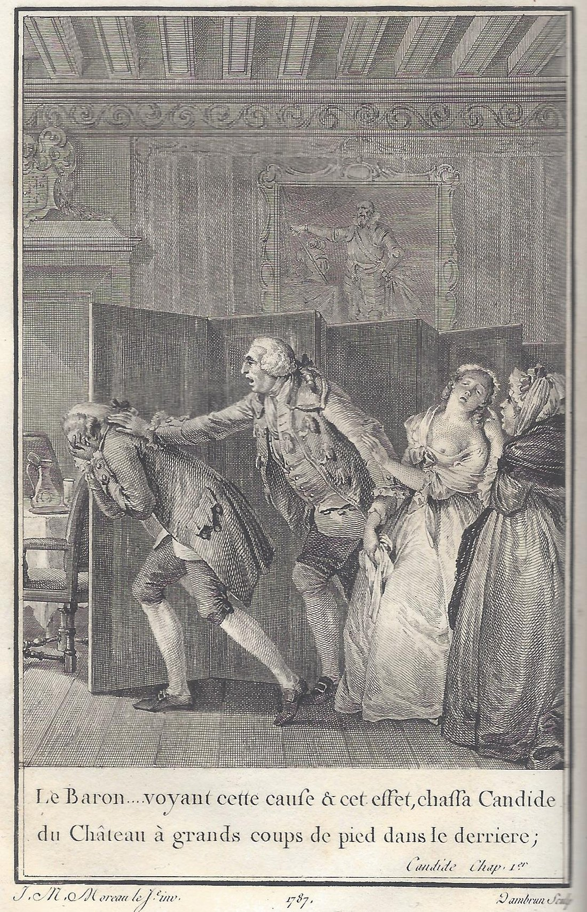
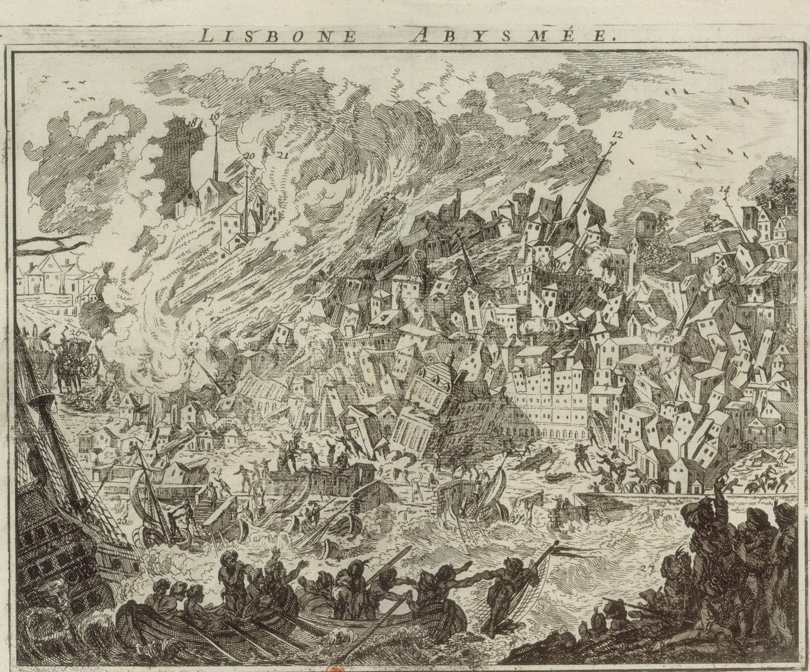
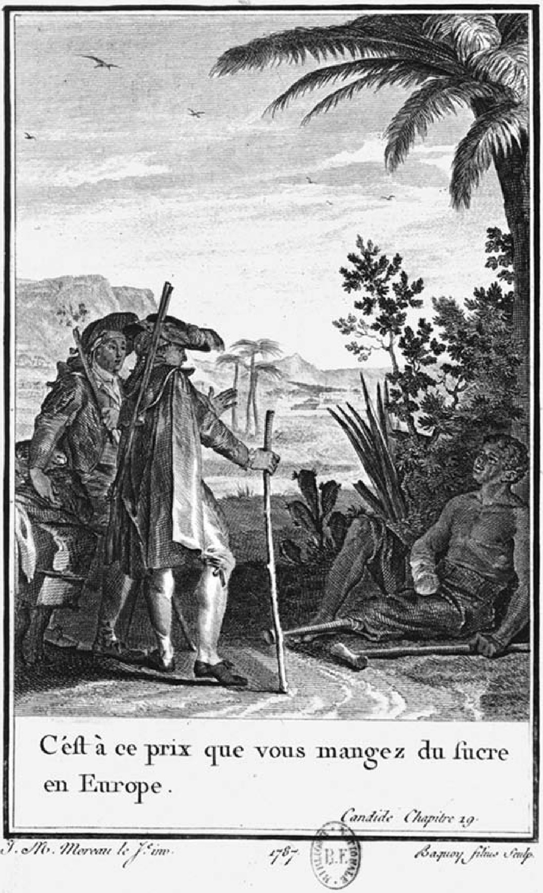

Sans JavaScript, tous les onglets restent visibles à la suite.
Présentation de la séquence
Un jeune homme naïf est chassé d'un château où on lui a appris que tout est au mieux. Il traverse la guerre, un tremblement de terre, l'Inquisition, un pays parfait, une plantation d'esclaves, et il finit dans un petit jardin. Voltaire nous fait rire à chaque page. Mais rire, est-ce déjà penser ?
Problématique
Le rire suffit-il à penser ?
L'œuvre en bref
- Voltaire, Candide, ou l'Optimisme, 1759. Un conte philosophique en trente chapitres, publié à Genève sans nom d'auteur (« traduit de l'allemand de M. le docteur Ralph ») et condamné par le Conseil de Genève le 2 mars 1759.
- Huit extraits étudiés, numérotés phrase par phrase : l'incipit, la guerre, Lisbonne, l'auto-da-fé (évaluation), le début du chapitre II (langue), l'Eldorado, l'esclave de Surinam, l'explicit.
- Un poème et trois images : le Poème sur le désastre de Lisbonne (1756), l'estampe « Lisbone abysmée » (1755), deux gravures de Moreau le Jeune (1787).
- Lecture cursive : Jules Verne, Le Tour du monde en quatre-vingts jours (1872) : un autre siècle, un autre voyage, un autre duo maître et valet.
Programme et niveau
- Programme : français, classe de seconde générale et technologique, arrêté du 17 janvier 2019, Bulletin officiel spécial n° 1 du 22 janvier 2019, modifié par l'arrêté du 28 septembre 2020 (BO n° 40 du 22 octobre 2020).
- Objet d'étude : le roman et le récit du XVIIIe siècle au XXIe siècle. Candide est la deuxième œuvre intégrale de l'année, de forme et de siècle différents de Stupeur et tremblements (roman, XXe siècle).
- Exercices : explication de texte, commentaire de texte, écrit d'appropriation (invention, association d'une image au texte), réponse argumentée sur l'œuvre.
- Niveau : seconde générale et technologique. Repère CECRL pour les élèves allophones : B2 conseillé ; la version dys, les lexiques et les phrases numérotées permettent un accès dès B1.
- Durée : dix séances de 52 minutes, environ quatre semaines, et la lecture du conte à la maison.
Les cinq directives du programme, et où elles se travaillent
1. Lire
« L'enseignement doit ici être construit autour d'œuvres intégrales. » ; « la lecture cursive d'au moins un roman ou un récit d'une autre période. »
Candide en lecture intégrale, selon un calendrier de lecture ; huit extraits étudiés ; lecture cursive de Jules Verne, Le Tour du monde en quatre-vingts jours (1872), avec un carnet.
2. Écrire
« le commentaire de texte » ; « l'écrit d'appropriation (écriture d'invention ou d'intervention à partir d'un extrait de l'une des œuvres étudiées [...] ; association d'une image au texte et justification de l'illustration [...] »
Diagnostic (séance 1), paragraphes d'analyse (3), chapitre inédit à la manière de Voltaire, noté (5), commentaire guidé (6), légende d'une gravure (8), réponse argumentée sur l'œuvre (10), première forme de la dissertation.
3. S'exprimer à l'oral
« l'explication de texte (la méthode est laissée au choix du professeur) » ; « l'exposé sur une question transversale au récit (personnages, lieux, temporalité, thèmes dominants ou valeurs en jeu, etc.) »
Lecture à voix haute du raisonnement de Pangloss (2), comparaison orale de trois documents (4), échange réglé sur le départ de l'Eldorado (7), défense en binôme d'une lecture de « cultiver notre jardin » (9).
4. Étudier la langue
« Plus généralement, dans l'ensemble des travaux écrits demandés aux élèves, une attention spécifique est portée à la correction de la langue, qui doit être prise en compte dans l'évaluation. »
À chaque séance, une Étude de la langue : leçon, exercices corrigés, contrôle noté de 5 à 6 minutes avec son barème et sa grille d'autocorrection ; une séance de langue entière (5) ; partie langue séparée dans les deux évaluations ; Projet Voltaire.
5. Construire une culture littéraire et artistique
« Il peut par exemple proposer des récits en image (peinture mythologique ou historique ; illustration [...]). Il peut, dans la mesure du possible, établir des liens avec les programmes des enseignements artistiques et ceux d'histoire »
Les Lumières et l'optimisme ; la guerre de Sept Ans ; le séisme de Lisbonne et le Poème de 1756 ; l'Inquisition ; l'esclavage colonial et ses abolitions ; une estampe de 1755 et deux gravures de Moreau le Jeune (1787).
Citations : programme de français de seconde générale et technologique, objet d'étude « Le roman et le récit du XVIIIe siècle au XXIe siècle » et partie « L'étude de la langue au lycée » (version consolidée publiée par Éduscol).
Objectifs de la séquence
- Lire une œuvre intégrale en suivant un calendrier et un carnet de lecture.
- Reconnaître et expliquer l'ironie : antiphrase, euphémisme, oxymore, gradation, faux raisonnement, regard naïf.
- Comprendre l'enjeu des Lumières : l'optimisme, la guerre, le fanatisme, l'esclavage, l'utopie, le travail.
- Écrire un paragraphe d'analyse et un commentaire guidé : une idée, une citation, une explication.
- Réemployer l'imparfait, le passé simple et l'ironie dans un écrit d'appropriation.
- Répondre à une question sur l'œuvre par une argumentation nuancée.
La spirale de Gorse
Elle accompagne la séquence. Six tours mènent d'une question générale à un vrai problème : un tour par séance, en séances 1, 2, 3, 4, 7 et 8. La question est à l'extérieur, la réponse attendue à l'intérieur ; à la pointe, le problème que la réponse argumentée finale doit affronter.
- 1Qu'est-ce qui nous fait rire dans un récit ?Un décalage : entre ce que l'on dit et ce que l'on montre, entre ce que l'on attend et ce qui arrive.
- 2Pourquoi un philosophe raconte-t-il une histoire ?Le conte rend une idée visible : Pangloss montre l'optimisme en action, et son ridicule.
- 3Peut-on rire de la guerre ?On rit des mots qui l'embellissent, jamais des morts : l'ironie retourne l'éloge en accusation.
- 4Que fait l'ironie devant une catastrophe ?Elle oppose le système de Pangloss aux faits : les larmes des survivants réfutent « tout est bien ».
- 5Un monde parfait fait-il rire ?L'Eldorado fait sourire de l'Europe : par contraste, c'est nous qui paraissons étranges.
- 6Quand le rire s'arrête-t-il ?Devant l'homme réduit en esclavage à Surinam : Voltaire lui donne la parole, et Candide pleure.
À la pointe. Le rire suffit-il à penser ? Il ouvre les yeux en mettant à distance les discours tout faits. Mais Voltaire sait l'arrêter quand il faut montrer la souffrance, et il finit par une décision : « il faut cultiver notre jardin ». Le rire aide à penser, à condition de ne pas s'en contenter.
Les séances
| Séance | Titre | Support | Production | Étude de la langue |
|---|---|---|---|---|
| 1 | Entrer dans le conte : diagnostic et contrat de lecture | titre, incipit, explicit, gravure | diagnostic écrit, hypothèses | Les accords dans le groupe nominal |
| 2 | Le meilleur des châteaux possibles : l'incipit et l'ironie | texte 1 (chapitre I) | lecture à voix haute | Cause et conséquence : les connecteurs |
| 3 | Une boucherie héroïque : la guerre | texte 2 (chapitre III) | paragraphe d'analyse | L'accord du participe passé |
| 4 | Tout est bien ? Le tremblement de terre de Lisbonne | textes 3 et 3 bis, estampe | comparaison orale | Les valeurs du présent dans un récit au passé |
| 5 | Écrire à la manière de Voltaire : imparfait et passé simple | texte 5 (chapitre II) | chapitre inédit (/10) | Imparfait et passé simple : le premier plan et l'arrière-plan |
| 6 | Un bel auto-da-fé : évaluation de mi-parcours | texte 4 (chapitre VI, non étudié) | commentaire guidé (/20) | partie langue /10 |
| 7 | Un monde parfait ? L'Eldorado | texte 6 (chapitre XVIII) | échange réglé | Le système hypothétique |
| 8 | « C'est à ce prix » : l'esclave de Surinam, une dénonciation | texte 7 (chapitre XIX), gravure | légende développée | Les pronoms relatifs et la mise en relief « c'est ... que » |
| 9 | « Il faut cultiver notre jardin » : l'explicit | texte 8 (chapitre XXX) et texte 1 | défense orale en binôme | Le discours rapporté : direct, indirect, narrativisé |
| 10 | Le rire suffit-il à penser ? Évaluation finale | toute l'œuvre | réponse argumentée (/20) | partie langue /10 |
Contrat de lecture et calendrier
| Pour la séance | Chapitres à avoir lus | Lecture cursive (Verne) |
|---|---|---|
| 2 | I et II | chapitres I à V |
| 3 | III et IV | |
| 4 | V et VI | chapitres VI à XV |
| 5 | VII à X | |
| 6 (mi-parcours) | XI à XVI | chapitres XVI à XXV |
| 7 | XVII et XVIII | |
| 8 | XIX à XXII | chapitres XXVI à XXXVII (fin) |
| 9 | XXIII à XXX : tout le conte | carnet de lecture cursive rempli |
- Le carnet de lecture : après chaque lecture, une phrase recopiée et deux lignes de réaction ; il est autorisé à l'évaluation finale, sans le livre.
- Droit à l'essai : une interprétation peut évoluer ; elle s'appuie sur une phrase numérotée.
- Rire du texte, jamais des personnes : on rit de ce que Voltaire ridiculise (les systèmes, les discours, les puissants), jamais des victimes ni d'un camarade.
- Neutralité : nous analysons la critique que Voltaire fait du fanatisme et de l'intolérance au XVIIIe siècle ; les croyances des élèves ne sont ni demandées ni discutées.
- Mots exacts : l'esclavage est un crime ; le mot « nègre » de 1759 est lu dans le texte, jamais employé dans nos phrases.
Les évaluations en un coup d'œil
| Quand | Quoi | Comment |
|---|---|---|
| Séance 1 | Diagnostic écrit | non noté, rendu en séance 10 |
| Séances 1 à 5, 7 à 9 | Contrôles de langue | 5 à 6 minutes, /5 ou /6, avec barème et grille d'autocorrection |
| Séance 5 | Chapitre inédit (écrit d'appropriation) | /10 |
| Séance 6 | Mi-parcours : commentaire guidé du chapitre VI | /20, et partie langue séparée /10 |
| Séance 7 | Savoir prendre une correction | fiche notée /5 |
| Séance 10 | Réponse argumentée sur l'œuvre | /20, et partie langue séparée /10 |
Sujets, grilles, corrigés : onglet Évaluations.
Voltaire ailleurs sur le site : ce qui ne se répète pas
En première, la séquence Le quatrième pouvoir étudie Voltaire contre la censure (De l'horrible danger de la lecture, l'article « Liberté d'imprimer ») et cite Candide dans un exercice de classement (argumentation directe ou indirecte) ; sa leçon de langue porte sur la négation. Ici, Candide est lu en entier, pour lui-même : aucun de ces textes, aucune de ces images, aucun de ces exercices n'est repris, et les notions de langue sont différentes. En première, les élèves pourront donc s'appuyer sur ce qu'ils auront appris du conte.
Téléchargements
Fiche professeur
PDF · Word · LibreOffice
Fiches élèves, une activité par page
PDF · Word · LibreOffice
Fiches élèves en gros caractères
PDF · Word · LibreOffice
Version dys
PDF · Word · LibreOffice
Évaluations : sujets élèves
PDF · Word · LibreOffice
Corrigés et grilles (professeur)
PDF · Word · LibreOffice
Savoir prendre une correction et autocorrection
PDF · Word · LibreOffice
Les textes et documents de la séquence
PDF · Word · LibreOffice
Crédits
Image d'en-tête : « Château de Voltaire à Ferney 10 », Brücke-Osteuropa, 2012, CC0, via Wikimedia Commons. Gravures de Jean-Michel Moreau le Jeune pour l'édition de Kehl (1787) et estampe « Lisbone abysmée » (1755, Bibliothèque nationale de France) : domaine public, via Wikimedia Commons. Textes de Voltaire : domaine public.
Sources des textes : Project Gutenberg, ebook n° 4650 (édition Beuchot, Firmin Didot) et Wikisource pour Candide ; Wikisource, édition Garnier pour le Poème sur le désastre de Lisbonne ; Project Gutenberg pour Jules Verne. Ferney : site du château de Voltaire, Centre des monuments nationaux.
© 2026 Madame Carole Paoli Pompougnac · CC BY-NC-SA 4.0
Fiches élèves en PDF Word LibreOffice
Séance 1. Entrer dans le conte : diagnostic et contrat de lecture
Durée : 52 minutes. Compétences : LectureÉcritureOralLangue
Objectifs : formuler des hypothèses de lecture à partir du titre, de la première et de la dernière phrase du conte et d'une gravure ; faire un diagnostic de l'écrit et de la langue, non noté ; signer le contrat de lecture ; entrer dans la spirale de Gorse ; réviser les accords dans le groupe nominal.
Matériel : fiche élève 1 ; le document A (gravure de Moreau le Jeune) projeté ; une enveloppe par binôme avec quatre cartes : le titre complet, la première phrase, la dernière phrase, la gravure ; le calendrier de lecture (Accueil).
Déroulé minute par minute
| Minutes | Ce qui se passe | Ce que dit ou fait le professeur |
|---|---|---|
| 0 à 4 | Rituel d'entrée. Accueil à la porte, installation, date et titre dans le cahier. Au tableau, la phrase du jour : « Tout est au mieux. » (Pangloss, chapitre I) | Je lis la phrase d'un ton très sûr de moi : « Qui parle ainsi ? Le croyez-vous ? » |
| 4 à 13 | Activité 1. Le seuil du livre : les binômes ouvrent l'enveloppe et formulent trois hypothèses sur le conte (personnage, ton, idée). | « Un titre, une première phrase, une dernière phrase, une image : c'est assez pour parier sur un livre. Vous aurez le droit de vous tromper. » |
| 13 à 16 | Spirale de Gorse, tour 1 : « Qu'est-ce qui nous fait rire dans un récit ? » Réponses au tableau, puis réponse commune notée. | « Nous partons d'une question large ; tour après tour, elle va se resserrer jusqu'à celle de la séquence. » |
| 16 à 29 | Activité 2. Diagnostic écrit (10 à 12 lignes), non noté : un personnage naïf croit tout ce qu'on lui dit. | « Je ne note pas aujourd'hui : je regarde votre écriture pour construire la suite. » |
| 29 à 42 | Étude de la langue. Les accords dans le groupe nominal : leçon, exercices corrigés, contrôle noté /5 (5 minutes), grille d'autocorrection. | « Voltaire écrit “les mœurs les plus douces” : qui commande l'accord ? » |
| 42 à 45 | Projet Voltaire (3 minutes) : accord de l'adjectif dans le groupe nominal. Sans connexion : l'exercice papier de la fiche. | « Trois minutes, une règle, puis vous corrigez votre propre phrase du jour. » |
| 45 à 49 | Contrat de lecture : le calendrier des chapitres, le carnet de lecture, la lecture cursive. Trace écrite. | Je distribue le calendrier ; un élève relit la trace. |
| 49 à 52 | Rituel de sortie. Billet de sortie : « Mon hypothèse sur Candide : ... ; je la vérifierai en lisant le chapitre ... » ; devoir noté dans l'agenda. | Je ramasse les billets à la porte ; je vérifie que le devoir est noté. J'ouvrirai la séance suivante par une réponse d'élève. |
Activité 1. Le seuil du livre : quatre cartes pour un pari de lecture LectureOral
Pour l'enseignant. Distribuer les enveloppes face cachée. Ne rien dire de Voltaire avant la mise en commun. Accepter toute hypothèse appuyée sur un mot d'une carte. Révéler ensuite que le « docteur Ralph » n'existe pas : c'est Voltaire, qui se cache, et que Genève fait détruire le livre deux mois plus tard.
Pour les élèves.
Ouvre l'enveloppe. Lis les quatre cartes, puis remplis le tableau avec ton binôme.
- Carte 1. Le titre de la première édition (1759) : « Candide, ou l'Optimisme, traduit de l'allemand de M. le docteur Ralph ».
- Carte 2. La première phrase : « Il y avait en Vestphalie, dans le château de M. le baron de Thunder-ten-tronckh, un jeune garçon à qui la nature avait donné les mœurs les plus douces. »
- Carte 3. La dernière phrase : « Cela est bien dit, répondit Candide, mais il faut cultiver notre jardin. »
- Carte 4. La gravure : document A, ci-dessous.
Document A · Moreau le Jeune, chapitre I, 1787

| Je parie que... | Le mot ou le détail qui me le fait penser |
|---|---|
| Le personnage principal est ... | |
| Le ton du livre sera ... (sérieux, drôle, triste) | |
| Le livre veut nous faire réfléchir à ... |
Question bonus : pourquoi un auteur publierait-il son livre sous un faux nom ?
Corrigé (prof)
Hypothèses attendues : un jeune homme simple, sincère, naïf (« candide » est un adjectif : pur, sans malice ; « l'esprit le plus simple ») ; un ton léger, peut-être moqueur (le nom imprononçable « Thunder-ten-tronckh », le coup de pied de la gravure) ; une réflexion sur l'optimisme (le sous-titre) et sur le bonheur (« cultiver notre jardin »). Entre la première et la dernière phrase, le héros a changé : il était « élevé » dans un château, il finit par travailler un jardin. Bonus : pour échapper à la censure et aux poursuites ; le livre est en effet condamné à Genève le 2 mars 1759.
Activité 2. Écrit diagnostique : un personnage qui croit tout Écriture
Pour les élèves.
Écris 10 à 12 lignes. Invente un personnage très naïf, qui croit tout ce qu'on lui dit. Raconte une scène où on lui explique quelque chose de faux avec beaucoup d'assurance, et où il le croit. Fais sourire le lecteur.
Règles : le récit est au passé ; on ne se moque d'aucune personne réelle ; tu peux inventer les noms et les lieux.
Corrigé (prof)
Non noté. Grille de diagnostic (professeur) : le récit est-il au passé, avec des temps cohérents ? Le décalage comique est-il perceptible (assurance du maître, naïveté de l'élève) ? Le lecteur comprend-il que l'explication est fausse ? Langue à suivre : accords dans le groupe nominal et sujet-verbe, imparfait et passé simple, ponctuation du dialogue. Conserver la copie : elle sera relue en séance 10.
Étude de la langue · Les accords dans le groupe nominal Langue
Pour les élèves.
La leçon
Dans le groupe nominal, le nom commande : le déterminant et l'adjectif prennent son genre et son nombre.
- « les mœurs les plus douces » : mœurs est un nom féminin pluriel.
- Plusieurs adjectifs pour un même nom : « Cunégonde [...] était haute en couleur, fraîche, grasse, appétissante » (attributs du sujet, féminin singulier).
- Un adjectif pour deux noms de genre différent se met au masculin pluriel : « une tapisserie et un château anciens ».
- Au superlatif, l'article s'accorde aussi : « la meilleure des baronnes », « le plus beau des châteaux ».
Je m'entraîne
Accorde l'adjectif entre parenthèses.
- des leçons (admirable)
- une baronne et un baron (puissant)
- les plus (beau) des châteaux
- la (meilleur) des philosophes possibles
Contrôle de langue noté (5 minutes, /5)
- Accorde : « des domestiques (ancien) »
- Accorde : « une dignité et un air (respectable) »
- Accorde : « la (meilleur) des baronnes »
- Accorde : « des mœurs (doux) »
- Corrige les deux erreurs : « Les chiens du baron formait une meute nombreux. »
Grille d'autocorrection
| Je sais... | Oui | Pas encore |
|---|---|---|
| reconnaître le nom qui commande l'accord | □ | □ |
| accorder plusieurs adjectifs | □ | □ |
| accorder un adjectif avec deux noms de genre différent | □ | □ |
| accorder un superlatif | □ | □ |
Si je coche « pas encore », je fabrique une carte mémoire de la règle pour la séance suivante.
Corrigé (prof)
Corrigé des exercices.
1. admirables · 2. puissants (masculin pluriel) · 3. beaux · 4. meilleure (accord avec « la », Voltaire parle ici d'une femme).
Contrôle : corrigé et barème (/5).
1. anciens · 2. respectables · 3. meilleure · 4. douces (mœurs : féminin pluriel) · 5. « Les chiens du baron formaient une meute nombreuse. » (sujet « les chiens » ; « meute » féminin singulier) : 1 point si les deux corrections sont justes, 0,5 pour une seule. Un point par item.
Trace écrite
À copier dans le cahier.
Ce que je retiens. Candide, ou l'Optimisme est un conte philosophique de Voltaire, publié en 1759 sous un faux nom. Un conte, parce qu'il raconte des aventures invraisemblables avec des personnages simples ; philosophique, parce qu'il fait réfléchir à une idée : ici, l'optimisme, l'idée que « tout est bien ». Le héros, Candide, est naïf : son nom veut dire « pur, sans malice ». Question de la séquence : le rire suffit-il à penser ?
Pour la prochaine fois
Travail à la maison.
Lis les chapitres I et II du conte. Dans ton carnet de lecture, recopie une phrase qui t'a fait sourire et explique en deux lignes pourquoi. Commence la lecture cursive : Jules Verne, Le Tour du monde en quatre-vingts jours (1872), chapitres I à V.
Tempête émotionnelle
L'écrit diagnostique ne demande aucune confidence : tout est inventé. Le chapitre I contient une scène amoureuse et une allusion sexuelle (la « leçon de physique expérimentale ») : on la nomme simplement, sans s'y arrêter. Un élève qui bloque peut écrire seulement le début de la scène.
Sorties de secours (plan B)
- Plan B, huit minutes : les quatre cartes lues à voix haute (2 min), trois hypothèses au tableau (3 min), billet de sortie (3 min).
- Pas d'enveloppes : les cartes sont sur la fiche élève.
- Pas de vidéoprojecteur : la gravure est décrite par le professeur, puis montrée sur la fiche imprimée.
- Plus de temps : chaque binôme invente un sous-titre pour un conte moderne (« Untel, ou ... ») et l'explique.
Séance 1 · Version dys
Lis les cartes avec le professeur. Entoure la bonne réponse.
- Candide veut dire : pur et naïf / méchant et rusé.
- Le sous-titre du livre est : l'Optimisme / la Tristesse.
- Au début, Candide vit dans : un château / un jardin.
- À la fin, il dit qu'il faut : cultiver notre jardin / acheter un château.
Écris quatre phrases : un personnage naïf croit une chose fausse.
Langue. Accorde : « des mœurs (doux) » ; « la (meilleur) des baronnes ».
© 2026 Madame Carole Paoli Pompougnac · CC BY-NC-SA 4.0
Fiches élèves en PDF Word LibreOffice
Séance 2. Le meilleur des châteaux possibles : l'incipit et l'ironie
Durée : 52 minutes. Compétences : LectureOralLangue
Objectifs : analyser un incipit : lieu, personnages, ton ; repérer l'ironie (le décalage entre ce que dit le texte et ce qu'il fait comprendre) ; démonter le raisonnement de Pangloss ; maîtriser les connecteurs de cause et de conséquence.
Matériel : texte 1 (incipit), phrases 1 à 20 ; fiche élève 2 ; la spirale de Gorse (Accueil) projetée.
Déroulé minute par minute
| Minutes | Ce qui se passe | Ce que dit ou fait le professeur |
|---|---|---|
| 0 à 4 | Rituel d'entrée. Accueil à la porte, installation, date et titre dans le cahier. Au tableau, la phrase du jour : « Monsieur le baron était un des plus puissants seigneurs de la Westphalie, car son château avait une porte et des fenêtres. » | Je lis la phrase sans sourire, puis je demande : « Est-ce une preuve ? » |
| 4 à 17 | Activité 1. Lecture de l'incipit par le professeur, puis questions : le château, la famille, Pangloss, Candide. Repérage de trois phrases ironiques. | « L'ironie, c'est dire une chose pour en faire comprendre une autre. Cherchez où le narrateur fait semblant d'admirer. » |
| 17 à 27 | Activité 2. Le raisonnement de Pangloss à l'épreuve : en binôme, on reformule la règle de Pangloss, on cherche l'erreur, puis on lit les phrases 15 à 18 à voix haute, d'un ton de professeur sûr de lui. | « Pangloss a l'air logique : il a des “car” et des “par conséquent”. Où est le piège ? » |
| 27 à 30 | Spirale de Gorse, tour 2 : « Pourquoi un philosophe raconte-t-il une histoire ? » | « Pangloss explique ; Voltaire, lui, raconte. Qu'est-ce que le récit fait voir ? » |
| 30 à 43 | Étude de la langue. Cause et conséquence : car, puisque, donc, par conséquent, aussi suivi de l'inversion. Leçon, exercices, contrôle noté /5 (5 minutes), grille. | « Voltaire se sert des connecteurs logiques pour fabriquer des raisonnements absurdes. » |
| 43 à 46 | Projet Voltaire (3 minutes) : les homophones car / quart et donc / dont. Sans connexion : l'exercice papier de la fiche. | « Trois minutes, une règle, puis vous corrigez votre propre phrase du jour. » |
| 46 à 49 | Trace écrite. | Lecture de la trace par un élève. |
| 49 à 52 | Rituel de sortie. Billet de sortie : « Une phrase ironique de l'incipit : « ... » ; elle fait comprendre que ... » ; devoir noté dans l'agenda. | Je ramasse les billets à la porte ; je vérifie que le devoir est noté. J'ouvrirai la séance suivante par une réponse d'élève. |
Activité 1. Un château modèle ? Lecture
Pour les élèves.
Lis le texte 1.
- Phrases 1 à 3 : relève les trois mots ou expressions qui font le portrait de Candide. Quel lien fais-tu avec son nom ?
- Phrases 5 à 8 : le baron est-il vraiment « un des plus puissants seigneurs » ? Relève deux détails qui disent le contraire.
- Phrase 9 : pourquoi la baronne est-elle « respectable » ? Que pense vraiment le narrateur ?
- Phrase 13 : que remarques-tu dans le nom de la matière enseignée par Pangloss ?
- Phrase 20 : recopie la liste des « degrés de bonheur » de Candide. Que montre cet ordre ?
- Choisis une phrase ironique et complète : « Le narrateur fait semblant de ..., mais il nous fait comprendre que ... »
Corrigé (prof)
- « les mœurs les plus douces », « le jugement assez droit », « l'esprit le plus simple » : il est droit et naïf, comme son nom (« candide » : pur, sans malice).
- Non : sa puissance se prouve par une porte et des fenêtres (phrase 5) ; une seule tapisserie (6) ; ses chiens de basse-cour font une « meute » et le vicaire du village sert de « grand-aumônier » (7) : c'est un petit seigneur qui joue au roi.
- Parce qu'elle pèse « environ trois cent cinquante livres », environ 170 kg : la « considération » vient du poids ! Le narrateur se moque de la baronne et de ceux qui l'admirent.
- C'est un mot inventé, très long, qui assemble « métaphysique », « théologie », « cosmologie » et, semble-t-il, « nigaud » (« nigologie ») : un savoir prétentieux et vide.
- Être baron ; être Cunégonde ; la voir ; entendre Pangloss. L'ordre est celui d'un enfant ébloui : la naissance noble vient d'abord, la philosophie en dernier ; et Pangloss devient « le plus grand philosophe [...] de toute la terre » parce qu'il est le plus grand de la province : un raisonnement faux.
- Exemple : « Le narrateur fait semblant d'admirer la puissance du baron, mais il nous fait comprendre que ce seigneur est ridicule : un château avec une porte et des fenêtres n'a rien d'exceptionnel. »
Activité 2. Le raisonnement de Pangloss à l'épreuve LectureOral
Pour l'enseignant. Faire lire les phrases 15 à 18 par trois volontaires, d'un ton doctoral. Personne n'est obligé de lire seul : un binôme peut lire à deux voix. Puis faire formuler l'erreur : Pangloss part de ce qui existe et prétend que c'était le but. Les lunettes ont été faites pour les nez, et non l'inverse.
Pour les élèves.
| Ce que dit Pangloss | Ce qui est vrai | Où est l'erreur ? |
|---|---|---|
| Les nez ont été faits pour porter des lunettes (phrase 16). | ||
| Les jambes sont instituées pour être chaussées (phrase 17). | ||
| Les cochons sont faits pour être mangés (phrase 18). |
Complète : « Pangloss inverse ... et ... . Voltaire nous fait rire de lui pour nous montrer que ... »
Corrigé (prof)
Les lunettes ont été inventées pour les nez ; les chausses pour les jambes ; les cochons n'ont pas été créés pour notre repas. Pangloss inverse la cause et le but : il part de ce qui existe et prétend que tout a été fait exprès, et pour le mieux. Voltaire caricature ainsi une philosophie de son temps, l'optimisme inspiré de Leibniz (« tout est bien »), qu'il juge aveugle devant le mal. Le rire vient du ton très sûr et des « car », « aussi », « par conséquent » qui donnent l'air d'une démonstration.
Étude de la langue · Cause et conséquence : les connecteurs Langue
Pour les élèves.
La leçon
Pour relier une cause et une conséquence, on utilise :
- pour la cause : car, parce que, puisque, comme (en début de phrase) : « Monsieur le baron était un des plus puissants seigneurs, car son château avait une porte » (phrase 5) ;
- pour la conséquence : donc, par conséquent, si bien que, aussi en tête de proposition, suivi de l'inversion du sujet : « aussi avons-nous des lunettes » (phrase 16).
« Car » se place entre deux propositions, après une virgule ; on ne commence pas une phrase par « car ». Voltaire fait rire en mettant ces mots sérieux au service de causes ridicules.
Je m'entraîne
Dis si le mot en gras introduit une cause ou une conséquence, puis récris la phrase 16 avec « donc ».
- Candide croyait Pangloss, car il le trouvait savant.
- Le baron se croit puissant ; par conséquent, il se fait appeler monseigneur.
- Puisque tout est bien, il ne faut rien changer, dit Pangloss.
Contrôle de langue noté (5 minutes, /5)
- Dans « car son château avait une porte et des fenêtres », le connecteur introduit-il une cause ou une conséquence ?
- Récris avec « par conséquent » : « Pangloss parle avec assurance. Candide le croit. »
- Récris avec « aussi » et l'inversion du sujet : « Il pleuvait. Nous sommes restés au château. »
- Complète avec « car » ou « donc » : « Candide est chassé du château, ... il a embrassé Cunégonde. »
- En une phrase, explique pourquoi « les jambes sont instituées pour être chaussées » est un raisonnement absurde.
Grille d'autocorrection
| Je sais... | Oui | Pas encore |
|---|---|---|
| distinguer cause et conséquence | □ | □ |
| employer « car » après une virgule | □ | □ |
| faire l'inversion après « aussi » | □ | □ |
| expliquer un raisonnement absurde | □ | □ |
Si je coche « pas encore », je fabrique une carte mémoire de la règle pour la séance suivante.
Corrigé (prof)
Corrigé des exercices.
1. cause · 2. conséquence · 3. cause (une cause présentée comme évidente). Phrase 16 : « Les nez ont été faits pour porter des lunettes ; nous avons donc des lunettes. »
Contrôle : corrigé et barème (/5).
1. une cause · 2. « Pangloss parle avec assurance ; par conséquent, Candide le croit. » · 3. « Il pleuvait ; aussi sommes-nous restés au château. » (0,5 si l'inversion manque) · 4. car · 5. Pangloss inverse la cause et le but : les chausses ont été faites pour les jambes, pas l'inverse. Un point par item.
Trace écrite
À copier dans le cahier.
Ce que je retiens. L'incipit présente le lieu (un château de Westphalie), les personnages et le ton. Le narrateur emploie l'ironie : il fait semblant d'admirer le baron, la baronne et Pangloss, mais les détails montrent qu'ils sont ridicules. Pangloss enseigne que nous vivons dans « le meilleur des mondes possibles » ; son raisonnement inverse la cause et le but. Le conte rend l'idée visible, et risible.
Pour la prochaine fois
Travail à la maison.
Lis les chapitres III et IV. Prépare oralement en deux phrases : « Ce que Candide découvre en quittant le château, c'est ... ». Apprends la leçon de langue.
Tempête émotionnelle
La baronne est moquée pour son poids : rappeler que le texte se moque de ceux qui admirent ce poids comme un signe de rang, et qu'en classe on ne commente jamais le corps d'un élève. Tout propos blessant est repris immédiatement.
Sorties de secours (plan B)
- Plan B, huit minutes : lecture des phrases 5 à 8 (2 min), une phrase ironique expliquée au tableau (3 min), billet (3 min).
- Classe agitée : passer à l'activité 1 en écrit individuel, minuteur au tableau.
- Plus de temps : chaque binôme invente un « raisonnement de Pangloss » sur un objet du lycée (« les tables ont été faites pour ... ; aussi ... »).
Séance 2 · Version dys
Texte court : phrases 1, 5, 16 et 20 du texte 1, lues par le professeur.
- Candide a l'esprit : très compliqué / très simple.
- Le baron est puissant car son château a : une porte et des fenêtres / cent tours. Est-ce une bonne raison ? oui / non
- Pangloss dit que les nez sont faits pour : porter des lunettes / respirer. A-t-il raison ? oui / non
Complète : « Voltaire se moque de Pangloss parce que ... »
Langue. Cause ou conséquence ? « Candide pleure, car il est chassé. » ; « Il est chassé ; donc il part. »
© 2026 Madame Carole Paoli Pompougnac · CC BY-NC-SA 4.0
Fiches élèves en PDF Word LibreOffice
Séance 3. Une boucherie héroïque : la guerre
Durée : 52 minutes. Compétences : LectureÉcritureLangue
Objectifs : analyser comment l'ironie retourne l'éloge d'une bataille en dénonciation (antiphrase, oxymore, euphémisme, chiffres) ; écrire un paragraphe d'analyse avec une citation ; accorder le participe passé.
Matériel : texte 2 (chapitre III), phrases 1 à 11 ; fiche élève 3 ; surligneurs de deux couleurs.
Déroulé minute par minute
| Minutes | Ce qui se passe | Ce que dit ou fait le professeur |
|---|---|---|
| 0 à 4 | Rituel d'entrée. Accueil à la porte, installation, date et titre dans le cahier. Au tableau, la phrase du jour : « ... cette boucherie héroïque. » (chapitre III) | J'écris les deux mots en grand : « Ces deux mots vont-ils ensemble ? » |
| 4 à 18 | Activité 1. Lecture du texte 2 ; deux couleurs : les mots de la fête et de la beauté, les mots du massacre. Questions sur les procédés. | « Le texte commence comme une parade. Regardez où il nous emmène. » |
| 18 à 28 | Activité 2. Paragraphe d'analyse (8 lignes) : comment Voltaire dénonce-t-il la guerre ? Une idée, une citation, une explication. | « Je n'attends pas votre avis sur la guerre en général : j'attends ce que fait le texte. » |
| 28 à 31 | Spirale de Gorse, tour 3 : « Peut-on rire de la guerre ? » | « De quoi rit-on exactement : des morts, ou des mots qui les cachent ? » |
| 31 à 44 | Étude de la langue. L'accord du participe passé (avec être, avec avoir, employé seul). Leçon, exercices, contrôle noté /5 (5 minutes), grille. | « “Des femmes égorgées”, “un village brûlé” : le participe dit ce qu'on a fait aux victimes. » |
| 44 à 47 | Projet Voltaire (3 minutes) : accord du participe passé avec être. Sans connexion : l'exercice papier de la fiche. | « Trois minutes, une règle, puis vous corrigez votre propre phrase du jour. » |
| 47 à 49 | Trace écrite. | Lecture de la trace. |
| 49 à 52 | Rituel de sortie. Billet de sortie : « Le mot de Voltaire qui m'a le plus frappé : « ... », parce que ... » ; devoir noté dans l'agenda. | Je ramasse les billets à la porte ; je vérifie que le devoir est noté. J'ouvrirai la séance suivante par une réponse d'élève. |
Activité 1. De la parade au massacre Lecture
Pour l'enseignant. Annoncer la coupe : le chapitre complet décrit des viols et des corps mutilés ; nous lisons jusqu'aux vieillards et aux femmes égorgées. Un élève peut ne travailler que les phrases 1 à 7.
Pour les élèves.
Lis le texte 2. Surligne d'une couleur les mots de la fête et de la beauté, d'une autre les mots de la mort.
- Phrase 1 : quels adjectifs décrivent les armées ? Quel spectacle croit-on voir ?
- Phrase 2 : pourquoi l'« harmonie » est-elle comparée à l'« enfer » ?
- Phrases 3 à 5 : relève les chiffres. Que produit leur précision ? Que veut dire « ôta du meilleur des mondes » ?
- Phrase 4 : la « raison suffisante » est une expression de Pangloss. Pourquoi Voltaire l'emploie-t-il ici ?
- Phrase 6 : « boucherie héroïque » est un oxymore (deux mots de sens opposé réunis). Explique-le.
- Phrases 7 et 8 : que font les deux rois ? Que veut dire « selon les lois du droit public » ?
Corrigé (prof)
- « si beau, si leste, si brillant, si bien ordonné » : une parade, un spectacle élégant ; l'intensif « si » répété prépare la chute.
- Une harmonie « telle qu'il n'y en eut jamais en enfer » : la comparaison détruit l'éloge ; la musique militaire est infernale.
- Six mille, neuf à dix mille, quelques milliers, une trentaine de mille : le ton est celui d'un compte, froid, presque administratif ; la précision rend le massacre plus choquant. « Ôter du meilleur des mondes » est un euphémisme : tuer ; et il retourne contre Pangloss sa formule.
- Pour montrer que la philosophie de Pangloss explique tout, même la mort : la baïonnette devient une « cause » comme une autre. Le système optimiste semble absurde devant la guerre.
- « Boucherie » dit le massacre ; « héroïque » dit la gloire. Les deux réunis montrent l'écart entre la réalité et le discours qui l'embellit.
- Ils font chanter des Te Deum, chacun dans son camp : chacun remercie Dieu de sa victoire, ce qui est absurde. « Selon les lois du droit public » est une antiphrase : les règles de la guerre servent à justifier un village brûlé.
Activité 2. Un paragraphe d'analyse : idée, citation, explication Écriture
Pour les élèves.
Réponds en 8 lignes : Comment Voltaire dénonce-t-il la guerre dans ce passage ?
Méthode : une idée (« Voltaire ... ») ; une citation exacte entre guillemets, avec le numéro de la phrase ; une explication du procédé (« ce mot montre que ... ») ; une phrase de conclusion.
Corrigé (prof)
Exemple : « Voltaire dénonce la guerre en faisant semblant de l'admirer. Il décrit d'abord une parade : “Rien n'était si beau, si leste, si brillant” (phrase 1). Mais il compte ensuite les morts avec une précision froide, “à peu près six mille hommes de chaque côté” (phrase 3), puis il réunit dans l'oxymore “boucherie héroïque” (phrase 6) la réalité du massacre et le mot de la gloire. Le lecteur sourit d'abord du ton, puis comprend que les beaux mots cachent des morts. L'ironie ne rit pas des victimes : elle rit des discours qui les oublient. » Critères : idée claire (1), citation exacte et située (1), procédé nommé et expliqué (2), langue (1).
Étude de la langue · L'accord du participe passé Langue
Pour les élèves.
La leçon
Le participe passé (brûlé, égorgé, détruit, fini) s'accorde selon son emploi.
- Employé seul, comme un adjectif : il s'accorde avec le nom : « des femmes égorgées », « des vieillards criblés de coups » (phrase 9).
- Avec être : il s'accorde avec le sujet : « les armées étaient bien ordonnées » ; « les maisons sont renversées ».
- Avec avoir : il ne s'accorde jamais avec le sujet. Il s'accorde avec le complément d'objet direct (COD) seulement si ce COD est placé avant le verbe : « les Bulgares ont brûlé les villages » ; mais « les villages que les Bulgares ont brûlés ».
Astuce : pour entendre la terminaison, remplace par un verbe du 3e groupe : « détruit / détruite ».
Je m'entraîne
Accorde le participe passé.
- Les armées étaient (ordonner).
- Les villages que les soldats ont (brûler).
- Les soldats ont (brûler) les villages.
- Une ville (détruire).
Contrôle de langue noté (5 minutes, /5)
- Accorde : « Les canons ont (renverser) six mille hommes. »
- Accorde : « Les hommes que les canons ont (renverser). »
- Accorde : « La bataille était (finir). »
- Accorde : « des villes (détruire) »
- Explique l'accord dans « leurs femmes égorgées ».
Grille d'autocorrection
| Je sais... | Oui | Pas encore |
|---|---|---|
| accorder le participe employé seul | □ | □ |
| accorder avec être | □ | □ |
| ne pas accorder avec le sujet quand l'auxiliaire est avoir | □ | □ |
| repérer un COD placé avant le verbe | □ | □ |
Si je coche « pas encore », je fabrique une carte mémoire de la règle pour la séance suivante.
Corrigé (prof)
Corrigé des exercices.
1. ordonnées (avec être, sujet féminin pluriel) · 2. brûlés (avec avoir, COD « que » mis pour « villages », placé avant) · 3. brûlé (COD placé après) · 4. détruite (employé seul).
Contrôle : corrigé et barème (/5).
1. renversé (COD après le verbe) · 2. renversés (COD « que » = les hommes, avant le verbe) · 3. finie (avec être, sujet féminin singulier) · 4. détruites · 5. participe employé comme adjectif : il s'accorde avec « femmes », féminin pluriel. Un point par item.
Trace écrite
À copier dans le cahier.
Ce que je retiens. Voltaire dénonce la guerre par l'ironie : il décrit la bataille comme une fête (éloge apparent), puis il compte les morts avec froideur et réunit des mots opposés (oxymore : « boucherie héroïque »). L'euphémisme (« ôta du meilleur des mondes ») et l'antiphrase (« selon les lois du droit public ») montrent que les beaux discours cachent le massacre. On ne rit pas des victimes : on rit des mots qui les cachent.
Pour la prochaine fois
Travail à la maison.
Lis les chapitres V et VI. Recopie dans ton carnet la phrase de Pangloss que tu trouves la plus absurde, et explique en deux lignes. Continue Jules Verne (chapitres VI à XV).
Tempête émotionnelle
Le texte parle de massacres. Certains élèves ont pu vivre la guerre ou l'exil, eux ou leur famille : on ne demande jamais de témoignage ; on parle du texte de 1759 et de la guerre de Sept Ans, sans débat sur les conflits actuels. Un élève peut sortir lire au calme la fiche de l'activité 2, selon les modalités prévues.
Sorties de secours (plan B)
- Plan B, huit minutes : phrases 1 et 6 lues et comparées (4 min), l'oxymore expliqué au tableau (2 min), billet (2 min).
- Pas de surligneurs : souligner et encadrer.
- Plus de temps : chercher dans le chapitre IV une autre phrase où Pangloss explique un malheur par « la raison suffisante ».
Séance 3 · Version dys
Texte court : phrases 1, 3 et 6 du texte 2, lues par le professeur.
| Mots de la fête | Mots de la mort |
|---|---|
| beau, ... | six mille hommes, ... |
- « Boucherie héroïque » : boucherie veut dire massacre / fête ; héroïque veut dire glorieux / triste.
- Voltaire admire la guerre / dénonce la guerre.
Écris deux phrases : « Voltaire dénonce la guerre quand il écrit “...” . Cela montre que ... »
Langue. Accorde : « des villes (détruire) » ; « la bataille était (finir) ».
© 2026 Madame Carole Paoli Pompougnac · CC BY-NC-SA 4.0
Fiches élèves en PDF Word LibreOffice
Séance 4. Tout est bien ? Le tremblement de terre de Lisbonne
Durée : 52 minutes. Compétences : LectureOralLangue
Objectifs : comprendre l'enjeu philosophique du séisme de 1755 (le mal existe-t-il ?) ; comparer trois réactions au désastre ; comparer deux textes de Voltaire sur le même fait, un conte et un poème ; lire une image d'époque ; identifier les valeurs du présent.
Matériel : texte 3 (chapitre V) et texte 3 bis (poème de 1756) ; document B (estampe « Lisbone abysmée ») projeté ; fiche élève 4.
Déroulé minute par minute
| Minutes | Ce qui se passe | Ce que dit ou fait le professeur |
|---|---|---|
| 0 à 4 | Rituel d'entrée. Accueil à la porte, installation, date et titre dans le cahier. Au tableau, la phrase du jour : « Quelle peut être la raison suffisante de ce phénomène ? » (Pangloss) | Je lis la question devant l'image du séisme, sans commentaire. |
| 4 à 8 | Contexte : le 1er novembre 1755, Lisbonne ; un séisme, un raz-de-marée, des incendies. Toute l'Europe se demande : comment parler de « meilleur des mondes » ? | « Pour la première fois, une catastrophe devient une question de philosophie partout en Europe. » Lien possible avec le professeur de SVT (séismes) et d'histoire. |
| 8 à 20 | Activité 1. Trois hommes devant le désastre : le matelot, Pangloss, Candide (texte 3). Tableau et questions. | « Le même séisme, trois réactions. Laquelle nous fait rire ? Laquelle nous fait penser ? » |
| 20 à 29 | Activité 2. Un conte, un poème, une image : le même désastre, trois façons d'en parler. Comparaison en binôme, puis mise en commun orale. | « Trois ans avant Candide, Voltaire avait écrit un poème. Pourquoi revenir au même fait avec le rire ? » |
| 29 à 32 | Spirale de Gorse, tour 4 : « Que fait l'ironie devant une catastrophe ? » | « Qui a tort, ici : la terre, ou le discours de Pangloss ? » |
| 32 à 45 | Étude de la langue. Les valeurs du présent dans un récit au passé. Leçon, exercices, contrôle noté /5 (5 minutes), grille. | « Pourquoi Voltaire passe-t-il soudain au présent au moment où la terre tremble ? » |
| 45 à 47 | Projet Voltaire (2 minutes) : conjugaison du passé simple, 3e personne. Sans connexion : l'exercice papier de la fiche. | « Trois minutes, une règle, puis vous corrigez votre propre phrase du jour. » |
| 47 à 49 | Trace écrite. | Lecture de la trace. |
| 49 à 52 | Rituel de sortie. Billet de sortie : « Devant le malheur, Pangloss ... ; moi, je pense que ... » ; devoir noté dans l'agenda. | Je ramasse les billets à la porte ; je vérifie que le devoir est noté. J'ouvrirai la séance suivante par une réponse d'élève. |
Activité 1. Trois hommes devant le désastre Lecture
Pour les élèves.
Lis le texte 3.
| Personnage | Ce qu'il dit ou fait (phrase) | Ce que cela montre de lui |
|---|---|---|
| Le matelot | ||
| Pangloss | ||
| Candide |
- Phrases 1 et 2 : relève trois verbes au présent qui décrivent la catastrophe. Quel effet produisent-ils ?
- Phrase 7 : que font Candide et Pangloss le lendemain ? Pourquoi ce détail est-il important ?
- Phrase 8 : compte les « car ». Que veut prouver Pangloss ? Son raisonnement console-t-il les convives ?
Corrigé (prof)
Matelot : il pense à l'argent (« il y aura quelque chose à gagner ici », phrase 3) : la cupidité, l'indifférence. Pangloss : il cherche la « raison suffisante » (4) : il théorise au lieu d'agir. Candide : il crie (« Voici le dernier jour du monde ! », 5) : il a peur et souffre ; il est humain.
- « sentent », « s'élève », « brise », « couvrent », « s'écroulent » : le présent de narration rend la catastrophe soudaine et place le lecteur au cœur du désastre ; l'énumération donne le rythme de l'effondrement.
- Ils « travaillèrent comme les autres à soulager les habitants » : avant de raisonner, ils agissent ; le récit montre l'entraide, ce qui annonce déjà l'idée de « cultiver notre jardin ».
- Quatre « car » ; Pangloss veut prouver que tout est nécessaire, donc bien. Les convives « arrosaient leur pain de leurs larmes » : sa démonstration ne console personne ; elle paraît absurde et presque cruelle.
Activité 2. Un conte, un poème, une image LectureOral
Pour l'enseignant. Lire le poème à voix haute, lentement. Faire comparer le ton : le poème est pathétique (il fait pleurer), le conte est ironique (il fait sourire, puis réfléchir). Dans les deux, Voltaire vise la même phrase : « tout est bien ». Rester dans l'analyse : on ne demande pas aux élèves leurs croyances religieuses.
Pour les élèves.
Lis le texte 3 bis et observe le document B.
Document B · « Lisbone abysmée », estampe, 1755

| Le conte (1759) | Le poème (1756) | L'estampe (1755) | |
|---|---|---|---|
| Ce qui est montré | |||
| Le ton (fait rire, pleurer, peur...) | |||
| Ce que pense l'auteur de « Tout est bien » |
À l'oral, en binôme : lequel des trois documents te fait le plus réfléchir ? Donne une raison et un mot du document.
Corrigé (prof)
Conte : le désastre en accéléré, puis Pangloss qui raisonne ; ton ironique ; « tout est bien » est ridiculisé par le contraste avec les larmes. Poème : des victimes, des corps, des cris (« Ô malheureux mortels ! ») ; ton pathétique, apostrophes ; les « philosophes trompés » qui crient « Tout est bien » sont accusés directement. Estampe : la ville qui s'effondre et les survivants dans les barques ; ton de terreur ; elle montre sans juger. L'ironie oblige le lecteur à faire lui-même le chemin entre le discours et les faits ; le pathétique le fait compatir.
Étude de la langue · Les valeurs du présent dans un récit au passé Langue
Pour les élèves.
La leçon
Le présent n'exprime pas seulement le moment où l'on parle.
- Présent de narration : dans un récit au passé, il rend une action soudaine et vivante, comme si elle se passait sous nos yeux : « À peine ont-ils mis le pied dans la ville [...] qu'ils sentent la terre trembler » (phrase 1).
- Présent de vérité générale : il énonce ce qui est toujours vrai, ou présenté comme tel : « tout est bien » (Pangloss, phrase 8).
- Le récit revient ensuite au passé simple pour les actions (« ils réparèrent un peu leurs forces », phrase 6) et à l'imparfait pour le décor ou la durée (« le repas était triste »).
Je m'entraîne
Donne la valeur du présent.
- « la mer s'élève en bouillonnant dans le port »
- « il est impossible que les choses ne soient pas où elles sont » (Pangloss)
- « trente mille habitants [...] sont écrasés sous des ruines »
Récris au passé simple : « Le matelot court au milieu des débris et trouve de l'argent. »
Contrôle de langue noté (5 minutes, /5)
- Quelle est la valeur du présent dans « les maisons s'écroulent » ?
- Quelle est la valeur du présent dans « tout est bien » ?
- Mets au passé simple : « La terre tremble. »
- Mets au passé simple : « Ils marchent vers Lisbonne. »
- En une phrase : pourquoi Voltaire passe-t-il au présent au moment du séisme ?
Grille d'autocorrection
| Je sais... | Oui | Pas encore |
|---|---|---|
| reconnaître un présent de narration | □ | □ |
| reconnaître un présent de vérité générale | □ | □ |
| conjuguer au passé simple à la 3e personne | □ | □ |
| expliquer l'effet d'un changement de temps | □ | □ |
Si je coche « pas encore », je fabrique une carte mémoire de la règle pour la séance suivante.
Corrigé (prof)
Corrigé des exercices.
1. présent de narration · 2. présent de vérité générale (présentée comme telle par Pangloss) · 3. présent de narration (forme passive). « Le matelot courut au milieu des débris et trouva de l'argent. »
Contrôle : corrigé et barème (/5).
1. présent de narration · 2. vérité générale · 3. La terre trembla. · 4. Ils marchèrent vers Lisbonne. · 5. Pour rendre la catastrophe soudaine et la mettre sous les yeux du lecteur. Un point par item.
Trace écrite
À copier dans le cahier.
Ce que je retiens. Le séisme de Lisbonne (1er novembre 1755) a fait douter l'Europe de l'optimisme : comment dire que « tout est bien » ? Voltaire répond deux fois : par un poème pathétique (1756), puis par le conte ironique (1759). Dans le chapitre V, trois réactions s'opposent : l'indifférence cupide (le matelot), le système qui explique tout (Pangloss), la peur et la souffrance (Candide). Le présent de narration rend la catastrophe soudaine. L'ironie confronte le discours de Pangloss aux faits.
Pour la prochaine fois
Travail à la maison.
Lis les chapitres VII à X. Apprends la leçon. Prépare pour la séance 5 : relève dans le chapitre II trois verbes à l'imparfait et trois au passé simple.
Tempête émotionnelle
Catastrophe et deuil : un élève touché par un séisme, une inondation ou un deuil récent peut travailler sur le poème seul ou sur l'image, ou faire l'activité 1 par écrit. Les croyances religieuses ne sont ni demandées ni discutées : on analyse le débat d'idées du XVIIIe siècle.
Sorties de secours (plan B)
- Pas d'image : la décrire à partir de la fiche imprimée (document B, onglet Textes).
- Plan B, huit minutes : phrases 3 à 5 (les trois réactions) lues et classées (5 min), billet (3 min).
- Plus de temps : lire la fin du chapitre V (le dialogue avec le familier de l'Inquisition) et dire ce que Pangloss risque.
Séance 4 · Version dys
Texte court : phrases 3, 4, 5 et 8 du texte 3, lues par le professeur.
| Personnage | Il pense à... |
|---|---|
| Le matelot | l'argent / les morts |
| Pangloss | la raison du séisme / aider les gens |
| Candide | la fin du monde / le dîner |
Complète : « Pangloss dit que tout est bien, mais les convives pleurent. Voltaire montre que ... »
Langue. Mets au passé simple : « La terre tremble. »
© 2026 Madame Carole Paoli Pompougnac · CC BY-NC-SA 4.0
Fiches élèves en PDF Word LibreOffice
Séance 5. Écrire à la manière de Voltaire : imparfait et passé simple
Durée : 52 minutes. Compétences : LangueÉcritureLecture
Objectifs : distinguer les valeurs de l'imparfait (arrière-plan, durée, habitude) et du passé simple (actions de premier plan) ; conjuguer le passé simple aux 3e personnes ; réemployer ces temps et l'ironie dans un écrit d'appropriation : un chapitre inédit du conte.
Matériel : texte 5 (chapitre II, début) ; fiche élève 5 ; tableau de conjugaison du passé simple ; grille de relecture.
Déroulé minute par minute
| Minutes | Ce qui se passe | Ce que dit ou fait le professeur |
|---|---|---|
| 0 à 4 | Rituel d'entrée. Accueil à la porte, installation, date et titre dans le cahier. Au tableau, la phrase du jour : « La neige tombait à gros flocons. » / « Il se coucha sans souper. » | J'écris les deux phrases l'une sous l'autre : « Laquelle est le décor ? Laquelle fait avancer l'histoire ? » |
| 4 à 8 | Rappel de lecture : questionnaire oral éclair sur les chapitres I à X (cinq questions). | Je pose les questions ; les élèves répondent sur l'ardoise. Pas de note. |
| 8 à 11 | Projet Voltaire (3 minutes) : terminaisons du passé simple : -a / -it / -ut, -èrent / -irent / -urent. Sans connexion : l'exercice papier de la fiche. | « Trois minutes, une règle, puis vous corrigez votre propre phrase du jour. » |
| 11 à 25 | Étude de la langue (1). Leçon sur l'imparfait et le passé simple à partir du texte 5 ; exercices corrigés au tableau. | « Au premier plan, ce qui arrive ; à l'arrière-plan, ce qui dure. Le passé simple fait avancer ; l'imparfait installe. » |
| 25 à 31 | Étude de la langue (2). Contrôle noté /6 (6 minutes), puis grille d'autocorrection. | « Six minutes, seuls. » |
| 31 à 45 | Activité 1. Écrit d'appropriation noté /10 : un chapitre inédit de Candide (12 à 15 lignes). | Je circule ; je rappelle : un titre à la Voltaire, le décor à l'imparfait, les actions au passé simple, un raisonnement de Pangloss. |
| 45 à 49 | Relecture avec la grille ; deux corrections visibles en couleur. Trace écrite. | « Une couleur pour vos corrections : elles comptent. » |
| 49 à 52 | Rituel de sortie. Billet de sortie : « Le verbe au passé simple que j'ai eu du mal à écrire : ... ; sa forme juste : ... » ; devoir noté dans l'agenda. | Je ramasse les billets à la porte ; je vérifie que le devoir est noté. J'ouvrirai la séance suivante par une réponse d'élève. |
Activité 1. Un chapitre inédit de Candide (écrit d'appropriation, /10) Écriture
Pour les élèves.
Texte 5 · Chapitre II, « Ce que devint Candide parmi les Bulgares » (début)
- 1 Candide, chassé du paradis terrestre, marcha longtemps sans savoir où, pleurant, levant les yeux au ciel, les tournant souvent vers le plus beau des châteaux qui renfermait la plus belle des baronnettes ; il se coucha sans souper au milieu des champs entre deux sillons ; la neige tombait à gros flocons.
- 2 Candide, tout transi, se traîna le lendemain vers la ville voisine, qui s'appelle Valdberghoff-trarbk-dikdorff, n'ayant point d'argent, mourant de faim et de lassitude.
- 3 Il s'arrêta tristement à la porte d'un cabaret.
- 4 Deux hommes habillés de bleu le remarquèrent : Camarade, dit l'un, voilà un jeune homme très bien fait, et qui a la taille requise ; ils s'avancèrent vers Candide et le prièrent à dîner très civilement.
Texte du domaine public : Voltaire, Candide, ou l'Optimisme, 1759, édition Beuchot (Firmin Didot), Project Gutenberg, ebook n° 4650 ; autre édition en ligne : Wikisource (Garnier, 1877). Orthographe modernisée (« fesait » devient « faisait ») ; phrases numérotées pour la classe ; [...] signale une coupe.
- transi
- pénétré de froid
- la lassitude
- la grande fatigue
- la taille requise
- la taille exigée pour entrer dans l'armée
- civilement
- poliment
Sujet. Écris un chapitre inédit de 12 à 15 lignes. Candide arrive dans un lieu d'aujourd'hui (une gare, un supermarché, une salle de sport, un stade...) et découvre un objet ou une habitude qu'il ne comprend pas ; Pangloss, qui l'accompagne, lui explique que tout y est « au mieux ».
- Commence par un titre à la manière de Voltaire : « Comment Candide ... et ce qu'en pensa Pangloss ».
- Le décor et ce qui dure sont à l'imparfait ; les actions, au passé simple.
- Pangloss fait un raisonnement absurde avec « car », « aussi » ou « par conséquent ».
- Le lecteur doit sourire et comprendre ce que tu critiques, sans que tu le dises.
- On ne se moque d'aucune personne réelle.
Corrigé (prof)
| Critère | Points |
|---|---|
| Titre à la manière de Voltaire | /1 |
| Récit cohérent, avec un lieu et une découverte | /2 |
| Imparfait et passé simple bien choisis et bien conjugués | /3 |
| Un raisonnement de Pangloss ironique (connecteur, inversion de la cause et du but) | /2 |
| Langue : accords, ponctuation | /2 |
Extrait de copie attendue : « Comment Candide fut conduit dans un supermarché, et ce qu'en pensa Pangloss. Il faisait chaud, et les portes s'ouvraient toutes seules devant les clients. Candide recula d'un pas. “Remarquez bien, dit Pangloss, que ces portes ont été faites pour que nous entrions ; aussi entrons-nous.” Ils marchèrent longtemps entre des montagnes de boîtes ; Candide demanda pourquoi on vendait trente sortes d'eau. Pangloss prouva qu'il fallait trente soifs différentes, car tout est au mieux. »
Étude de la langue · Imparfait et passé simple : le premier plan et l'arrière-plan Langue
Pour les élèves.
La leçon
Dans un récit au passé, deux temps se partagent le travail.
- Le passé simple : les actions de premier plan, limitées, qui se succèdent et font avancer l'histoire : « Candide [...] marcha longtemps », « il se coucha sans souper », « il s'arrêta », « deux hommes [...] le remarquèrent ».
- L'imparfait : l'arrière-plan (décor, description, durée, habitude) : « la neige tombait à gros flocons » ; « Candide écoutait attentivement » (chapitre I).
Le passé simple aux 3e personnes. Verbes en -er : il chanta, ils chantèrent. Verbes en -ir et la plupart des verbes en -re : il finit, il prit, il fit, il vit ; ils finirent, prirent. Autres : il fut, il eut, il put, il connut ; ils furent. Venir : il vint, ils vinrent. Attention : « il chanta » ne prend jamais de -t.
Je m'entraîne
1. Classe les verbes conjugués des phrases 1 et 3 du texte 5 : premier plan ou arrière-plan ?
2. Conjugue au passé simple, 3e personne du singulier puis du pluriel : voir, faire, prendre, venir, être, avoir.
3. Récris au passé : « Il pleut. Candide entre dans un cabaret. Deux hommes boivent près du feu ; ils l'invitent. »
Contrôle de langue noté (6 minutes, /6)
- Conjugue au passé simple : il (être)
- Conjugue au passé simple : il (voir)
- Conjugue au passé simple : il (prendre)
- Conjugue au passé simple : ils (chanter)
- Choisis : « La neige (tombait / tomba) quand Candide (se couchait / se coucha) dans les champs. »
- Explique en une phrase l'emploi de l'imparfait dans « la neige tombait à gros flocons ».
Grille d'autocorrection
| Je sais... | Oui | Pas encore |
|---|---|---|
| distinguer premier plan et arrière-plan | □ | □ |
| conjuguer le passé simple des verbes en -er (sans -t) | □ | □ |
| conjuguer fut, eut, vit, fit, prit, vint | □ | □ |
| choisir le temps dans un récit | □ | □ |
Si je coche « pas encore », je fabrique une carte mémoire de la règle pour la séance suivante.
Corrigé (prof)
Corrigé des exercices.
1. Premier plan : marcha, se coucha, s'arrêta ; arrière-plan : renfermait (château), tombait (neige). 2. vit / virent ; fit / firent ; prit / prirent ; vint / vinrent ; fut / furent ; eut / eurent. 3. « Il pleuvait. Candide entra dans un cabaret. Deux hommes buvaient près du feu ; ils l'invitèrent. »
Contrôle : corrigé et barème (/6).
1. fut · 2. vit · 3. prit · 4. chantèrent · 5. tombait / se coucha (0,5 par verbe) · 6. arrière-plan : le décor, une action qui dure pendant que Candide agit. Un point par item.
Trace écrite
À copier dans le cahier.
Ce que je retiens. Dans un récit au passé, le passé simple exprime les actions de premier plan, qui font avancer l'histoire ; l'imparfait, l'arrière-plan : décor, description, durée, habitude. Aux 3e personnes : il chanta, ils chantèrent ; il prit, ils prirent ; il fut, ils furent ; il vint, ils vinrent.
Pour la prochaine fois
Travail à la maison.
Lis les chapitres XI à XVI. Révise les séances 1 à 5 (traces et leçons de langue) pour l'évaluation de mi-parcours : commentaire guidé d'un chapitre que tu as lu et partie langue.
Tempête émotionnelle
L'écrit est noté : un élève bloqué commence par le titre et trois phrases, puis il est aidé par la grille. Les lieux d'aujourd'hui sont des lieux publics : on n'écrit pas sur sa famille ni sur un camarade.
Sorties de secours (plan B)
- Séance écourtée : le contrôle passe en priorité ; l'écrit d'appropriation devient le devoir, ramassé en séance 6.
- Projet Voltaire indisponible : l'exercice 2 de la leçon le remplace.
- Plus de temps : les volontaires lisent leur titre ; la classe devine le lieu.
Séance 5 · Version dys
Texte court : phrases 1 et 3 du texte 5, lues par le professeur.
| Verbe | Imparfait ou passé simple ? | Décor ou action ? |
|---|---|---|
| marcha | ||
| tombait | ||
| s'arrêta |
Écris 6 lignes : Candide découvre un objet d'aujourd'hui. Aide : « Il faisait ... . Candide vit ... . Pangloss dit : “Tout est au mieux, car ...” »
Langue. Conjugue au passé simple : il (être) ; il (voir) ; ils (chanter).
© 2026 Madame Carole Paoli Pompougnac · CC BY-NC-SA 4.0
Fiches élèves en PDF Word LibreOffice
Séance 6. Un bel auto-da-fé : évaluation de mi-parcours
Durée : 52 minutes. Compétences : LectureÉcritureLangue
Objectifs : évaluer la lecture analytique et le commentaire guidé d'un chapitre lu mais non étudié en classe (chapitre VI) ; évaluer séparément la langue des séances 1 à 5.
Matériel : sujet imprimé : texte 4 (chapitre VI, onglet Textes), questions, paragraphe de commentaire, partie langue ; brouillon.
Déroulé minute par minute
| Minutes | Ce qui se passe | Ce que dit ou fait le professeur |
|---|---|---|
| 0 à 3 | Rituel d'entrée. Accueil à la porte, installation, date et titre dans le cahier. Au tableau, la phrase du jour : « Si c'est ici le meilleur des mondes possibles, que sont donc les autres ? » | J'installe les tables en configuration d'évaluation et je lis la phrase sans commentaire. |
| 3 à 6 | Méthode rappelée au tableau : lire deux fois, repérer les procédés, citer, expliquer, conclure. | « Une idée, une citation, une explication : comme en séance 3. » |
| 6 à 9 | Lecture du chapitre VI par le professeur. | Je lis le texte une fois, lentement. |
| 9 à 38 | Commentaire guidé : questions (/8) et paragraphe rédigé (/12, dont /3 pour la langue). | « Je ne réponds pas aux questions sur le sens ; je réponds aux questions sur la consigne. » |
| 38 à 48 | Partie langue, barème séparé (/10). | « Dix minutes, seuls. » |
| 48 à 52 | Relecture finale avec la grille, puis ramassage. Billet : « Le plus difficile, c'était ... » | Je ramasse les copies dans l'ordre de la liste. |
Commentaire guidé du chapitre VI (/20) LectureÉcriture
Pour les élèves.
Texte 4 · Chapitre VI, « Comment on fit un bel auto-da-fé pour empêcher les tremblements de terre, et comment Candide fut fessé » (chapitre entier)
Texte de l'évaluation de mi-parcours. Après le séisme, Pangloss a parlé de liberté et de nécessité devant un « familier », un agent de l'Inquisition. Un auto-da-fé a bien eu lieu à Lisbonne en juin 1756.
- 1 Après le tremblement de terre qui avait détruit les trois quarts de Lisbonne, les sages du pays n'avaient pas trouvé un moyen plus efficace pour prévenir une ruine totale que de donner au peuple un bel auto-da-fé ; il était décidé par l'université de Coïmbre que le spectacle de quelques personnes brûlées à petit feu, en grande cérémonie, est un secret infaillible pour empêcher la terre de trembler.
- 2 On avait en conséquence saisi un Biscayen convaincu d'avoir épousé sa commère, et deux Portugais qui en mangeant un poulet en avaient arraché le lard : on vint lier après le dîner le docteur Pangloss et son disciple Candide, l'un pour avoir parlé, et l'autre pour l'avoir écouté avec un air d'approbation : tous deux furent menés séparément dans des appartements d'une extrême fraîcheur, dans lesquels on n'était jamais incommodé du soleil : huit jours après ils furent tous deux revêtus d'un san-benito, et on orna leurs têtes de mitres de papier : la mitre et le san-benito de Candide étaient peints de flammes renversées, et de diables qui n'avaient ni queues ni griffes ; mais les diables de Pangloss portaient griffes et queues, et les flammes étaient droites.
- 3 Ils marchèrent en procession ainsi vêtus, et entendirent un sermon très pathétique, suivi d'une belle musique en faux-bourdon.
- 4 Candide fut fessé en cadence, pendant qu'on chantait ; le Biscayen et les deux hommes qui n'avaient point voulu manger de lard furent brûlés, et Pangloss fut pendu, quoique ce ne soit pas la coutume.
- 5 Le même jour la terre trembla de nouveau avec un fracas épouvantable.
- 6 Candide épouvanté, interdit, éperdu, tout sanglant, tout palpitant, se disait à lui-même : Si c'est ici le meilleur des mondes possibles, que sont donc les autres ? passe encore si je n'étais que fessé, je l'ai été chez les Bulgares ; mais, ô mon cher Pangloss ! le plus grand des philosophes, faut-il vous avoir vu pendre, sans que je sache pourquoi ! ô mon cher anabaptiste ! le meilleur des hommes, faut-il que vous ayez été noyé dans le port ! ô mademoiselle Cunégonde ! la perle des filles, faut-il qu'on vous ait fendu le ventre !
- 7 Il s'en retournait, se soutenant à peine, prêché, fessé, absous, et béni, lorsqu'une vieille l'aborda, et lui dit : Mon fils, prenez courage, suivez-moi.
Texte du domaine public : Voltaire, Candide, ou l'Optimisme, 1759, édition Beuchot (Firmin Didot), Project Gutenberg, ebook n° 4650 ; autre édition en ligne : Wikisource (Garnier, 1877). Orthographe modernisée (« fesait » devient « faisait ») ; phrases numérotées pour la classe ; [...] signale une coupe.
- un auto-da-fé
- une cérémonie de l'Inquisition où des condamnés étaient brûlés en public
- l'université de Coïmbre
- l'université de Coimbra, au Portugal
- le san-benito
- la tunique que l'on faisait porter aux condamnés de l'Inquisition
- en faux-bourdon
- chanté à plusieurs voix, en accords
- absous
- pardonné de ses péchés par un prêtre
1. Questions (/8).
- Phrase 1 : quel remède les « sages » trouvent-ils contre les tremblements de terre ? Relève deux mots qui présentent ce remède comme une bonne idée. Que pense vraiment Voltaire ? (/2)
- Phrase 2 : pour quelles fautes les quatre hommes sont-ils arrêtés ? Que montre la disproportion entre la faute et la peine ? (/2)
- Phrase 2 : que désignent les « appartements d'une extrême fraîcheur, dans lesquels on n'était jamais incommodé du soleil » ? Nomme le procédé. (/1)
- Phrase 5 : « Le même jour la terre trembla de nouveau » : quel est l'effet de cette phrase courte après la cérémonie ? (/1)
- Phrases 6 et 7 : relève une question et une énumération. Que ressent Candide ? Que commence-t-il à mettre en doute ? (/2)
2. Paragraphe de commentaire (/12). En 15 à 20 lignes, réponds à la question : comment Voltaire fait-il de cette cérémonie une dénonciation du fanatisme ? Une idée directrice, deux citations exactes et situées, l'explication de deux procédés (antiphrase, euphémisme, énumération, phrase courte...), une phrase de conclusion.
Corrigé (prof)
Questions. 1. Un auto-da-fé : brûler des personnes en public ; « un moyen plus efficace », « un secret infaillible », « un bel auto-da-fé » : l'éloge est une antiphrase ; Voltaire dénonce une superstition cruelle (2). 2. Avoir épousé sa marraine (« commère ») ; avoir retiré le lard d'un poulet (on les soupçonne d'être juifs) ; Pangloss pour avoir parlé, Candide pour avoir écouté : la peine (le bûcher) est sans rapport avec des fautes minuscules ou imaginaires ; l'Inquisition punit des opinions (2). 3. Les cachots, la prison : un euphémisme ironique (1). 4. La chute comique et terrible : la cérémonie n'a servi à rien ; les faits démentent le raisonnement des « sages » (1). 5. « Si c'est ici le meilleur des mondes possibles, que sont donc les autres ? » ; « épouvanté, interdit, éperdu, tout sanglant, tout palpitant » ou « prêché, fessé, absous, et béni » ; il souffre, il est perdu ; il doute pour la première fois de la philosophie de Pangloss (2).
Paragraphe, grille.
| Critère | Points |
|---|---|
| Idée directrice claire, qui répond à la question | /2 |
| Deux citations exactes, entre guillemets, situées (numéro de phrase) | /2 |
| Deux procédés nommés et expliqués | /3 |
| Conclusion du paragraphe (le doute de Candide) | /2 |
| Langue du paragraphe : accords, temps, ponctuation | /3 |
Extrait de copie attendue : « Voltaire présente la cérémonie comme une fête pour mieux montrer sa cruauté. Les “sages” du pays trouvent que “le spectacle de quelques personnes brûlées à petit feu, en grande cérémonie, est un secret infaillible pour empêcher la terre de trembler” (phrase 1) : l'antiphrase fait de la torture un remède scientifique. La phrase courte “Le même jour la terre trembla de nouveau” (phrase 5) détruit ce raisonnement. Le fanatisme apparaît donc à la fois cruel et inutile. »
Partie langue (/10, barème séparé) Langue
Pour les élèves.
- Accorde : « des cérémonies (pathétique) » (/1)
- Accorde : « une mitre et un san-benito (peint) de flammes » (/1)
- Cause ou conséquence ? « On l'arrêta, car il avait parlé. » (/1)
- Récris avec « aussi » et l'inversion : « La terre trembla. Les sages décidèrent un auto-da-fé. » (/1)
- Accorde le participe : « Les hommes que l'Inquisition a (brûler) » (/1)
- Accorde le participe : « Pangloss fut (pendre). » ; « Candide et Pangloss furent (mener) en procession. » (/1)
- Donne la valeur du présent dans un récit au passé : « la terre tremble, les maisons s'écroulent ». (/1)
- Conjugue au passé simple : il (voir) ; ils (entendre). (/1)
- Choisis le temps : « Pendant qu'on (chantait / chanta), Candide (était / fut) fessé. » (/1)
- Recopie la phrase 5 du texte 4 et souligne le verbe au passé simple. Pourquoi ce temps ? (/1)
Corrigé (prof)
1. pathétiques · 2. peints (masculin pluriel) · 3. cause · 4. « La terre trembla ; aussi les sages décidèrent-ils un auto-da-fé. » · 5. brûlés · 6. pendu ; menés · 7. présent de narration · 8. vit ; entendirent · 9. chantait / fut · 10. « Le même jour la terre trembla de nouveau avec un fracas épouvantable. » : « trembla », passé simple, action de premier plan, brève et soudaine. Un point par item.
Note de langue reportée à part dans le carnet de notes ; la langue du paragraphe est, elle, comptée dans les /20.
Trace écrite
À copier dans le cahier.
Ce que je retiens. Commenter, c'est expliquer comment un texte produit son effet : une idée, une citation exacte et située, un procédé nommé et expliqué. Au chapitre VI, Voltaire dénonce le fanatisme par l'antiphrase (« un bel auto-da-fé ») et par les faits : la terre tremble de nouveau. Candide commence à douter : « que sont donc les autres ? »
Pour la prochaine fois
Travail à la maison.
Lis les chapitres XVII et XVIII (l'Eldorado). Note dans ton carnet trois choses qui existent en Europe et n'existent pas en Eldorado.
Tempête émotionnelle
Évaluation : rappeler la phrase pont (onglet Tempête). Le chapitre parle de bûchers et de pendaison : un élève qui en est troublé peut commencer par la partie langue. Religion : on analyse la dénonciation du fanatisme et de l'Inquisition par un auteur du XVIIIe siècle, jamais les croyances des élèves.
Sorties de secours (plan B)
- Séance écourtée : questions et paragraphe seulement ; la partie langue est passée en début de séance 7 (10 minutes).
- Élève absent : même sujet en rattrapage, au CDI ou à la vie scolaire, avec un tiers temps si prévu.
- Tiers temps : paragraphe de 10 à 12 lignes ; partie langue réduite aux items 1, 3, 5, 8, 9 (/5, ramenés sur 10).
Séance 6 · Version dys
Texte court : phrases 1, 5 et 6 du chapitre VI, lues par le professeur.
- Pour empêcher la terre de trembler, les sages décident : de brûler des hommes / de construire des murs.
- Le même jour, la terre : tremble encore / s'arrête.
- Voltaire pense que cette cérémonie est : utile / inutile et cruelle.
Complète le paragraphe : « Voltaire dénonce ... . Il écrit : “ ... ” (phrase 1). Mais la terre ... (phrase 5). Candide commence à douter : il se demande “ ... ” (phrase 6). »
Langue. Items 1, 3, 5, 8 et 9 de la partie langue.
© 2026 Madame Carole Paoli Pompougnac · CC BY-NC-SA 4.0
Fiches élèves en PDF Word LibreOffice
Séance 7. Un monde parfait ? L'Eldorado
Durée : 52 minutes. Compétences : LectureOralLangue
Objectifs : reconnaître une utopie et ce qu'elle critique par contraste ; analyser le regard naïf de Candide et du lecteur européen ; comprendre pourquoi Candide quitte le bonheur ; employer le système hypothétique ; prendre sa correction de mi-parcours.
Matériel : texte 6 (chapitre XVIII) ; copies de mi-parcours corrigées ; fiche « Je prends ma correction » ; fiche élève 7.
Déroulé minute par minute
| Minutes | Ce qui se passe | Ce que dit ou fait le professeur |
|---|---|---|
| 0 à 4 | Rituel d'entrée. Accueil à la porte, installation, date et titre dans le cahier. Au tableau, la phrase du jour : « Il faudrait que nous fussions fous. » (le vieillard d'Eldorado) | Je demande : « Qui est fou, d'après lui ? » |
| 4 à 8 | Retour des copies de mi-parcours : lecture du corrigé ; la fiche « Je prends ma correction » est commencée en classe et finie à la maison. | « Lisez le corrigé jusqu'au bout avant de regarder votre note une deuxième fois. » |
| 8 à 21 | Activité 1. Ce qui manque en Eldorado : relevé et analyse (texte 6). | « Une utopie dit ce qui n'existe pas encore. En la décrivant, Voltaire parle surtout de nous. » |
| 21 à 29 | Activité 2. Pourquoi partir ? Débat bref et réglé, en binômes, puis trois réponses à la classe. | « Candide quitte le pays parfait. A-t-il tort ? Appuyez-vous sur le conte, pas sur vos goûts. » |
| 29 à 32 | Spirale de Gorse, tour 5 : « Un monde parfait fait-il rire ? » | « Qui fait rire ici : les habitants d'Eldorado, ou les Européens ? » |
| 32 à 45 | Étude de la langue. Le système hypothétique. Leçon, exercices, contrôle noté /5 (6 minutes), grille. | « “Si notre ami Pangloss avait vu Eldorado, il n'aurait plus dit...” : Voltaire imagine ce qui n'a pas eu lieu. » |
| 45 à 47 | Projet Voltaire (2 minutes) : « si » suivi de l'imparfait, jamais du conditionnel. Sans connexion : l'exercice papier de la fiche. | « Trois minutes, une règle, puis vous corrigez votre propre phrase du jour. » |
| 47 à 49 | Trace écrite. | Lecture de la trace. |
| 49 à 52 | Rituel de sortie. Billet de sortie : « En Eldorado, il n'y a pas de ... ; Voltaire critique donc ... » ; devoir noté dans l'agenda. | Je ramasse les billets à la porte ; je vérifie que le devoir est noté. J'ouvrirai la séance suivante par une réponse d'élève. |
Activité 1. Ce qui manque en Eldorado Lecture
Pour les élèves.
Lis le texte 6.
| En Eldorado, il n'y a pas... | Phrase | Ce que Voltaire critique en Europe |
|---|---|---|
- Phrases 1 à 9 : pourquoi le vieillard « rougit »-il ? Qui pose des « questions bien singulières » ?
- Phrase 15 : relève l'énumération de verbes. Quel est le dernier, et pourquoi est-il placé à la fin ?
- Phrase 20 : qu'est-ce qui plaît le plus à Candide ? Pourquoi ce choix est-il important pour un philosophe des Lumières ?
- Phrase 17 : que découvre Candide sur Pangloss ?
Corrigé (prof)
Tableau : pas de religions rivales (phrases 5 à 8), pas de prières de demande (11), pas de prêtres séparés ni de moines (14 à 16), pas de tribunaux ni de procès (18), pas de prisons (19). Voltaire critique les querelles religieuses et l'intolérance, le pouvoir des moines, les procès et les prisons d'Europe.
- Il rougit de gêne : la question le surprend, comme si on doutait de sa reconnaissance. Les « questions bien singulières » sont celles des Européens : le regard s'inverse, ce sont eux qui paraissent étranges.
- « qui enseignent, qui disputent, qui gouvernent, qui cabalent, et qui font brûler les gens qui ne sont pas de leur avis » : une gradation qui va du savoir au crime ; le dernier verbe rappelle l'auto-da-fé du chapitre VI.
- Le palais des sciences, plein d'instruments de mathématiques et de physique : la raison et le savoir remplacent les tribunaux ; c'est l'idéal des Lumières.
- Que le château n'était pas « ce qu'il y avait de mieux sur la terre » : l'expérience corrige le système ; « il faut voyager ».
Activité 2. Pourquoi Candide quitte-t-il l'Eldorado ? Oral
Pour l'enseignant. Lire à la classe la phrase de la fin du chapitre : « les deux heureux résolurent de ne plus l'être ». Règles : une position, une raison tirée du conte, une réponse à l'autre. Le binôme qui ne veut pas parler devant la classe remet sa réponse écrite.
Pour les élèves.
À la fin du chapitre, Candide veut partir : il veut retrouver Cunégonde et devenir « plus riche que tous les rois ensemble » ; Voltaire écrit que « les deux heureux résolurent de ne plus l'être ».
- A défend : « Candide a raison de partir, parce que ... ».
- B répond : « Pourtant, ... ».
- Ensemble : que nous apprend ce départ sur le bonheur ?
Corrigé (prof)
Pistes : Candide part par amour (Cunégonde) et par vanité (se faire valoir, être riche) ; l'Eldorado est parfait mais fermé, immobile, et l'on y serait « comme les autres ». Voltaire suggère que l'homme ne sait pas rester heureux, et que l'utopie n'est pas un lieu où l'on peut vivre : elle sert à juger notre monde. L'or, sans valeur en Eldorado (« notre boue jaune »), deviendra la cause des malheurs suivants.
Étude de la langue · Le système hypothétique Langue
Pour les élèves.
La leçon
Pour imaginer une situation et sa conséquence, on emploie si suivi d'un temps de l'indicatif, puis le conditionnel.
- Si + présent → futur : la condition est possible : « Si tu lis Candide, tu riras. »
- Si + imparfait → conditionnel présent : condition imaginée dans le présent ou l'avenir : « Si nous vivions en Eldorado, nous n'aurions pas de procès. »
- Si + plus-que-parfait → conditionnel passé : condition qui ne s'est pas réalisée dans le passé (irréel du passé) : « si notre ami Pangloss avait vu Eldorado, il n'aurait plus dit que le château [...] était ce qu'il y avait de mieux » (phrase 17).
- On peut mêler les deux : « si vous n'aviez pas été chassé [...], vous ne mangeriez pas ici des cédrats confits » (chapitre XXX).
Règle d'or : après si (condition), jamais de conditionnel : on n'écrit pas « si j'aurais ».
Je m'entraîne
Conjugue les verbes entre parenthèses.
- Si Candide (rester) en Eldorado, il (être) heureux aujourd'hui. (irréel du présent)
- Si Candide (rester) en Eldorado, il (ne jamais connaître) Surinam. (irréel du passé)
- Si tu (vouloir), nous (partir) demain. (possible)
Contrôle de langue noté (6 minutes, /5)
- Conjugue (irréel du passé) : « Si Pangloss (voir) l'Eldorado, il (changer) d'avis. »
- Conjugue (irréel du présent) : « Si nous (vivre) en Eldorado, nous (ne pas avoir) de procès. »
- Corrige : « Si j'aurais de l'or, je l'achèterais. »
- Quel temps suit « si » dans « si vous n'aviez pas été chassé » ? Quel temps dans « vous ne mangeriez pas » ?
- Écris une phrase hypothétique sur l'Eldorado, à l'irréel du présent.
Grille d'autocorrection
| Je sais... | Oui | Pas encore |
|---|---|---|
| choisir le temps après « si » | □ | □ |
| conjuguer au conditionnel présent | □ | □ |
| conjuguer au conditionnel passé | □ | □ |
| ne jamais écrire « si j'aurais » | □ | □ |
Si je coche « pas encore », je fabrique une carte mémoire de la règle pour la séance suivante.
Corrigé (prof)
Corrigé des exercices.
1. restait, serait · 2. était resté, n'aurait jamais connu · 3. veux, partirons.
Contrôle : corrigé et barème (/5).
1. avait vu, aurait changé (1 si les deux sont justes, 0,5 pour un seul) · 2. vivions, n'aurions pas · 3. « Si j'avais de l'or, je l'achèterais. » · 4. plus-que-parfait (passif) ; conditionnel présent · 5. réponse libre juste, par exemple : « Si l'Europe ressemblait à l'Eldorado, on ne brûlerait personne. » Un point par item.
Trace écrite
À copier dans le cahier.
Ce que je retiens. L'Eldorado est une utopie : un pays parfait, imaginaire, qui permet de critiquer l'Europe par contraste (pas d'intolérance religieuse, pas de procès ni de prisons, un palais des sciences). Le regard s'inverse : ce sont les Européens qui paraissent étranges. Mais Candide le quitte : l'utopie sert à juger notre monde, pas à y vivre.
Pour la prochaine fois
Travail à la maison.
Termine la fiche « Je prends ma correction » (onglet Savoir prendre une correction). Lis les chapitres XIX à XXII. Apprends la leçon de langue.
Tempête émotionnelle
Correction : la note peut décevoir ; rappeler le bloc « Si la note fait mal ». Religion : l'Eldorado parle de Dieu et des prêtres ; on analyse la critique de l'intolérance par Voltaire, on ne discute pas la foi des élèves.
Sorties de secours (plan B)
- Pas le temps pour l'activité 2 : elle devient une question du billet de sortie.
- Plan B, huit minutes : phrases 15, 18 et 19 lues et commentées (5 min), billet (3 min).
- Plus de temps : inventer une loi de l'Eldorado pour le lycée, au conditionnel (« si notre lycée était l'Eldorado, ... »).
Séance 7 · Version dys
Texte court : phrases 15, 18, 19 et 20 du texte 6, lues par le professeur.
- En Eldorado, il y a des prisons : vrai / faux.
- En Eldorado, il y a un palais des sciences : vrai / faux.
- Voltaire critique : l'Eldorado / l'Europe.
Complète : « En Eldorado, il n'y a pas de ... . Voltaire veut montrer qu'en Europe ... »
Langue. Complète : « Si Pangloss avait vu l'Eldorado, il (changer) d'avis. »
© 2026 Madame Carole Paoli Pompougnac · CC BY-NC-SA 4.0
Fiches élèves en PDF Word LibreOffice
Séance 8. « C'est à ce prix » : l'esclave de Surinam, une dénonciation
Durée : 52 minutes. Compétences : LectureÉcritureLangue
Objectifs : analyser une dénonciation de l'esclavage : la parole donnée à la victime, les faits, l'ironie contre l'Europe et ses justifications ; observer le moment où le rire s'arrête ; associer une image au texte ; employer les pronoms relatifs et distinguer la mise en relief « c'est ... que ».
Matériel : texte 7 (chapitre XIX) ; document C (gravure de Moreau le Jeune) projeté ; fiche élève 8 ; repères historiques au tableau.
Déroulé minute par minute
| Minutes | Ce qui se passe | Ce que dit ou fait le professeur |
|---|---|---|
| 0 à 4 | Rituel d'entrée. Accueil à la porte, installation, date et titre dans le cahier. Au tableau, la phrase du jour : « C'est à ce prix que vous mangez du sucre en Europe. » | Je lis la phrase une fois, lentement, et je laisse un temps de silence. |
| 4 à 8 | Repères historiques : la traite et l'esclavage dans les colonies d'Amérique au XVIIIe siècle ; Surinam, colonie des Pays-Bas ; dates d'abolition ; la loi du 21 mai 2001. | « Nous lisons un texte de 1759 qui dénonce un crime ; nous employons des mots exacts. » Lien possible avec le professeur d'histoire. |
| 8 à 22 | Activité 1. La parole de l'homme réduit en esclavage : ce qu'il dit, comment il le dit, ce que comprend Candide (texte 7). | « Pour la première fois, Voltaire laisse longuement parler la victime. Écoutons-la. » |
| 22 à 30 | Activité 2. L'image et le texte : la gravure de 1787 et sa légende ; écrire une légende développée (5 lignes). | « L'illustrateur a choisi une phrase pour légende. Pourquoi celle-là ? » |
| 30 à 33 | Spirale de Gorse, tour 6 : « Quand le rire s'arrête-t-il ? » | « Dans ce chapitre, rit-on encore ? De qui ? » |
| 33 à 46 | Étude de la langue. Les pronoms relatifs ; la mise en relief « c'est ... que ». Leçon, exercices, contrôle noté /5 (5 minutes), grille. | « “L'état horrible où je te vois”, “les fétiches qui m'ont converti” : la relative précise ; “c'est à ce prix que” accuse. » |
| 46 à 48 | Projet Voltaire (2 minutes) : qui / qu'il, dont / donc. Sans connexion : l'exercice papier de la fiche. | « Trois minutes, une règle, puis vous corrigez votre propre phrase du jour. » |
| 48 à 49 | Trace écrite. | Lecture de la trace. |
| 49 à 52 | Rituel de sortie. Billet de sortie : « Ce passage dénonce ... ; la phrase qui me le montre le mieux : « ... » » ; devoir noté dans l'agenda. | Je ramasse les billets à la porte ; je vérifie que le devoir est noté. J'ouvrirai la séance suivante par une réponse d'élève. |
Activité 1. La parole de l'homme réduit en esclavage Lecture
Pour l'enseignant. Lire le texte vous-même. Ne pas faire lire le mot « nègre » par des élèves ; dans les réponses, on écrit « l'homme », « l'esclave » ou « l'homme réduit en esclavage ». Aucun élève n'est invité à parler de ses origines.
Pour les élèves.
Lis le texte 7.
- Phrase 1 : décris l'homme. Qu'est-ce que Voltaire choisit de montrer d'abord ?
- Phrases 5 à 7 : qui est responsable de cet état ? Que veut dire « c'est l'usage » ? Quelle est la règle qui explique la main et la jambe coupées ?
- Phrase 8 : à qui s'adresse le « vous » ? Pourquoi cette phrase est-elle la plus forte du passage ?
- Phrases 9 à 13 : relève deux justifications de l'esclavage que l'homme rapporte (sa mère, les prêtres). Comment montre-t-il qu'elles sont fausses ?
- Phrases 14 à 16 : que décide Candide ? Comment définit-il l'optimisme ? Pourquoi pleure-t-il ?
Corrigé (prof)
- Couché par terre, presque nu (« la moitié de son habit »), il lui manque « la jambe gauche et la main droite » : Voltaire montre d'abord le corps mutilé, sans commentaire.
- M. Vanderdendur, « le fameux négociant » (son nom évoque en néerlandais un marchand dur) ; « c'est l'usage » : la cruauté est devenue une règle ordinaire. La main est coupée quand la meule attrape un doigt (un accident), la jambe quand l'esclave s'enfuit : une punition.
- Aux Européens, donc au lecteur : le sucre qu'il consomme est payé par les souffrances des esclaves. La phrase relie le plaisir quotidien de l'Europe au crime des colonies : elle accuse.
- Sa mère croyait qu'il aurait « l'honneur d'être esclave » et ferait la fortune de ses parents ; les prêtres hollandais lui disent que « nous sommes tous enfants d'Adam, blancs et noirs ». Il montre leur fausseté par les faits : « ils n'ont pas fait la mienne » ; et par une conclusion logique : s'ils disent vrai, les maîtres traitent ainsi leurs propres cousins.
- Il renonce à l'optimisme ; c'est « la rage de soutenir que tout est bien quand on est mal ». Il pleure parce que les faits sont plus forts que le système de Pangloss : le rire s'arrête ; la compassion prend le relais.
Activité 2. L'image et le texte : une légende développée LectureÉcriture
Pour les élèves.
Document C · Moreau le Jeune, chapitre XIX, 1787

Observe le document C.
- Décris la scène : les personnages, leur position, le décor.
- Quelle phrase du texte l'illustrateur a-t-il choisie pour légende ? Pourquoi celle-là ?
- Écris une légende développée de 5 lignes pour une exposition : qui, quoi, quand, ce que dénonce la scène.
Corrigé (prof)
Candide et Cacambo sont debout, habillés ; l'homme est assis par terre, mutilé, sous un palmier : la composition oppose la hauteur des Européens et la souffrance de l'esclave. La légende reprend la phrase 8 : la plus accusatrice, celle qui s'adresse au spectateur européen. Exemple de légende : « Jean-Michel Moreau le Jeune illustre en 1787 le chapitre XIX de Candide. Près de Surinam, colonie néerlandaise, Candide et son valet rencontrent un homme réduit en esclavage, mutilé dans une plantation de canne à sucre. La phrase choisie pour légende rappelle au lecteur européen que son sucre est payé par cette souffrance. »
Étude de la langue · Les pronoms relatifs et la mise en relief « c'est ... que » Langue
Pour les élèves.
La leçon
Une proposition subordonnée relative complète un nom (son antécédent). Elle commence par un pronom relatif, qui a une fonction :
- qui : sujet : « les fétiches hollandais qui m'ont converti » ;
- que : complément d'objet direct : « le conte que nous lisons » ;
- dont : complément introduit par « de » : « l'homme dont Candide a pitié » (avoir pitié de) ;
- où : lieu ou temps : « l'état horrible où je te vois » ;
- lequel, laquelle, après une préposition : « le palais des sciences, dans lequel il vit une galerie » (texte 6).
Attention. Dans « C'est à ce prix que vous mangez du sucre », « que » n'est pas un pronom relatif : « c'est ... que » met en relief un groupe (« à ce prix »). On peut l'enlever : « Vous mangez du sucre à ce prix. »
Je m'entraîne
Relie les deux phrases par un pronom relatif.
- Candide rencontre un homme. Cet homme attend son maître.
- Voici le maître. L'homme a peur de ce maître.
- Surinam est une colonie. Des esclaves y travaillent dans les sucreries.
Contrôle de langue noté (5 minutes, /5)
- Relie avec « qui » : « Candide voit un homme. Cet homme est étendu par terre. »
- Relie avec « que » : « C'est un texte. Voltaire a écrit ce texte en 1759. »
- Relie avec « dont » : « C'est un conte. On parle encore de ce conte. »
- Relie avec « où » : « Surinam est une ville. Candide entre dans cette ville en pleurant. »
- Dans « C'est à ce prix que vous mangez du sucre en Europe », « que » est-il un pronom relatif ? Justifie.
Grille d'autocorrection
| Je sais... | Oui | Pas encore |
|---|---|---|
| trouver l'antécédent | □ | □ |
| choisir qui, que, dont, où | □ | □ |
| employer lequel après une préposition | □ | □ |
| reconnaître la mise en relief « c'est ... que » | □ | □ |
Si je coche « pas encore », je fabrique une carte mémoire de la règle pour la séance suivante.
Corrigé (prof)
Corrigé des exercices.
1. Candide rencontre un homme qui attend son maître. · 2. Voici le maître dont l'homme a peur. · 3. Surinam est une colonie où des esclaves travaillent dans les sucreries.
Contrôle : corrigé et barème (/5).
1. Candide voit un homme qui est étendu par terre. · 2. C'est un texte que Voltaire a écrit en 1759. · 3. C'est un conte dont on parle encore. · 4. Surinam est une ville où Candide entre en pleurant (accepter : dans laquelle). · 5. Non : c'est la mise en relief « c'est ... que » de « à ce prix » ; on peut dire « vous mangez du sucre à ce prix ». Un point par item.
Trace écrite
À copier dans le cahier.
Ce que je retiens. Au chapitre XIX, Voltaire dénonce l'esclavage dans les colonies d'Amérique. Il donne la parole à la victime, qui décrit les faits (les mutilations, « c'est l'usage ») et accuse le lecteur européen : « C'est à ce prix que vous mangez du sucre en Europe. » L'ironie vise les justifications (les marchands, les prêtres), jamais la victime. Candide renonce à l'optimisme et pleure : ici, le rire s'arrête pour laisser place à l'indignation. Repères : la France abolit l'esclavage en 1794, le rétablit en 1802 et l'abolit définitivement en 1848 ; la loi du 21 mai 2001 reconnaît la traite et l'esclavage comme crimes contre l'humanité.
Pour la prochaine fois
Travail à la maison.
Lis les chapitres XXIII à XXX : tu auras lu tout le conte. Finis Jules Verne et remplis le carnet de lecture cursive (onglet Textes). Apprends la leçon de langue.
Tempête émotionnelle
Esclavage et racisme : le texte peut blesser. Le mot « nègre » n'est lu que par le professeur ; tout propos raciste est repris immédiatement et signalé à la vie scolaire. Aucun élève n'est exposé à cause de ses origines ou de sa couleur de peau, ni invité à témoigner. Le handicap (les mutilations) est décrit pour dénoncer une violence, jamais pour en rire. Un élève peut travailler l'activité 2 seule.
Sorties de secours (plan B)
- Pas d'image : la décrire à partir de la fiche imprimée (document C, onglet Textes).
- Plan B, huit minutes : phrases 1, 8 et 16 lues par le professeur (2 min), une question au tableau : « Que dénonce Voltaire ? » (3 min), billet (3 min).
- Plus de temps : chercher dans le texte deux phrases encore ironiques ; expliquer qui elles visent.
Séance 8 · Version dys
Texte court : phrases 1, 7, 8 et 16 du texte 7, lues par le professeur.
- L'homme a perdu : une jambe et une main / ses chaussures.
- Selon lui, les Européens mangent du sucre grâce à : la souffrance des esclaves / la pluie.
- Voltaire : défend l'esclavage / dénonce l'esclavage.
- À la fin, Candide : rit / pleure.
Complète : « Voltaire dénonce ... . La phrase la plus forte est “ ... ”, parce que ... »
Langue. Relie avec « qui » : « Candide voit un homme. Cet homme attend son maître. »
© 2026 Madame Carole Paoli Pompougnac · CC BY-NC-SA 4.0
Fiches élèves en PDF Word LibreOffice
Séance 9. « Il faut cultiver notre jardin » : l'explicit
Durée : 52 minutes. Compétences : LectureOralLangue
Objectifs : analyser l'explicit et le comparer à l'incipit ; interpréter la formule finale et en défendre une lecture par une citation ; faire le bilan de la lecture cursive ; maîtriser le discours rapporté ; préparer l'évaluation finale.
Matériel : texte 8 (chapitre XXX) et texte 1 (incipit) ; carnets de lecture cursive ; fiche élève 9.
Déroulé minute par minute
| Minutes | Ce qui se passe | Ce que dit ou fait le professeur |
|---|---|---|
| 0 à 4 | Rituel d'entrée. Accueil à la porte, installation, date et titre dans le cahier. Au tableau, la phrase du jour : « Il faut cultiver notre jardin. » | Je demande : « Est-ce une conclusion de jardinier ou de philosophe ? » |
| 4 à 17 | Activité 1. La fin du voyage : le Turc, Pangloss, Martin, Candide ; comparaison avec l'incipit (texte 8 et texte 1). | « Le conte se referme : un château au début, une métairie à la fin. Qu'est-ce qui a changé ? » |
| 17 à 26 | Activité 2. Trois façons de comprendre « cultiver notre jardin » : en binôme, on en choisit une et on la défend par une citation ; trois binômes présentent. | « Il n'y a pas une seule bonne réponse ; il y a des réponses appuyées. » |
| 26 à 29 | Bilan de la lecture cursive : Phileas Fogg, Passepartout, Candide, Cacambo. Deux voyages, deux regards. | « Qu'est-ce que Verne et Voltaire font voir du monde en le faisant traverser ? » |
| 29 à 42 | Étude de la langue. Le discours rapporté : direct, indirect, narrativisé ; l'incise. Leçon, exercices, contrôle noté /5 (5 minutes), grille. | « Voltaire fait parler ses personnages sans guillemets : c'est l'incise, “dit Candide”, qui nous guide. » |
| 42 à 45 | Projet Voltaire (3 minutes) : ponctuation du dialogue : guillemets, virgule, incise. Sans connexion : l'exercice papier de la fiche. | « Trois minutes, une règle, puis vous corrigez votre propre phrase du jour. » |
| 45 à 49 | Trace écrite ; présentation du sujet et de la grille de l'évaluation finale. | Je distribue la grille : les élèves la gardent pour réviser. |
| 49 à 52 | Rituel de sortie. Billet de sortie : « Pour moi, « cultiver notre jardin », c'est ... » ; devoir noté dans l'agenda. | Je ramasse les billets à la porte ; je vérifie que le devoir est noté. J'ouvrirai la séance suivante par une réponse d'élève. |
Activité 1. La fin du voyage Lecture
Pour les élèves.
Lis le texte 8, puis relis les phrases 12 à 20 du texte 1.
- Phrase 2 : que possède le Turc ? Que lui apporte le travail ?
- Phrases 3 et 4 : que comprend Candide ? Avec qui compare-t-il le vieillard ?
- Phrases 6 et 11 : Pangloss a-t-il changé ? Que fait-il de toute l'histoire de Candide ?
- Phrase 7 : quelle est la position de Martin ?
- Phrases 8 à 10 : que devient chaque personnage ? Quel est le ton ?
- Phrase 12 : comment Candide répond-il à Pangloss ? Compare avec le Candide de l'incipit, qui « écoutait attentivement, et croyait innocemment ».
Corrigé (prof)
- Vingt arpents, qu'il cultive avec ses enfants ; le travail éloigne « trois grands maux, l'ennui, le vice, et le besoin » : une sagesse modeste et pratique.
- Que ce vieillard s'est fait « un sort bien préférable » à celui de six rois détrônés : le bonheur ne vient pas de la grandeur.
- Non : il cite la Bible pour justifier le travail, puis il refait la chaîne des causes (« si vous n'aviez pas été chassé... ») pour prouver que tout était nécessaire. Il reste ridicule et incorrigible.
- « Travaillons sans raisonner » : le travail rend la vie « supportable » ; c'est une sagesse sans illusions.
- Cunégonde, « bien laide », devient pâtissière ; Paquette brode ; la vieille s'occupe du linge ; Giroflée devient menuisier et « même » honnête homme : un ton de comédie, tendre et ironique ; chacun trouve sa place utile.
- « Cela est bien dit, [...] mais il faut cultiver notre jardin » : il écoute poliment, puis il ne discute plus ; il décide. Au début il croyait tout ; à la fin, il juge par lui-même. Le château de l'incipit, faux paradis, est remplacé par un jardin que l'on travaille ensemble.
Activité 2. Trois façons de comprendre « cultiver notre jardin » Oral
Pour l'enseignant. Écrire les trois lectures au tableau. Chaque binôme en défend une en une minute : une phrase de position, une citation, une raison. Les autres écoutent et notent l'argument le plus convaincant. Un binôme peut remettre sa réponse par écrit.
Pour les élèves.
| Lecture | Ce que cela veut dire | Ma citation (texte 8) |
|---|---|---|
| 1. Au sens propre | travailler la terre, faire un travail concret et utile | |
| 2. Agir à sa mesure | faire ce qui est à notre portée, avec les autres, plutôt que de vouloir tout changer ou tout expliquer | |
| 3. Arrêter les systèmes | cesser les discussions sans fin sur le mal et le meilleur des mondes, et s'occuper du réel |
Notre lecture : ... , parce que ... ; le texte le montre : « ... »
Corrigé (prof)
Les trois lectures se défendent. 1. Le Turc cultive ses vingt arpents ; la petite terre « rapporta beaucoup » (phrase 9). 2. « chacun se mit à exercer ses talents » (phrase 8) : une petite société où chacun est utile. 3. Candide coupe court au discours de Pangloss : « Cela est bien dit, [...] mais il faut cultiver notre jardin » (phrase 12) ; Martin : « Travaillons sans raisonner » (phrase 7). On attend une position, une citation exacte, une explication.
Étude de la langue · Le discours rapporté : direct, indirect, narrativisé Langue
Pour les élèves.
La leçon
Pour rapporter des paroles, un récit a trois moyens.
- Discours direct : les paroles telles qu'elles ont été dites. Aujourd'hui, on les encadre de guillemets ou on les introduit par un tiret. Voltaire, lui, s'en passe souvent : c'est l'incise qui signale la parole, avec l'inversion du sujet : « Je n'ai que vingt arpents, répondit le Turc » ; « Je sais aussi, dit Candide, qu'il faut cultiver notre jardin ».
- Discours indirect : les paroles sont intégrées au récit dans une subordonnée (« que », « si »), avec des changements de personne et de temps : « Le Turc répondit qu'il n'avait que vingt arpents. »
- Discours narrativisé : le récit résume les paroles sans les rapporter : « Candide [...] fit de profondes réflexions sur le discours du Turc » (phrase 3).
Je m'entraîne
1. Nomme le type de discours dans les phrases 2, 3 et 7 du texte 8.
2. Mets au discours indirect : « Je cultive mes terres avec mes enfants », dit le Turc.
3. Mets au discours direct, avec guillemets et incise : Martin dit qu'il fallait travailler sans raisonner.
Contrôle de langue noté (5 minutes, /5)
- Quel est le type de discours dans « Je sais aussi, dit Candide, qu'il faut cultiver notre jardin » ?
- Mets au discours indirect : Candide dit : « Il faut cultiver notre jardin. »
- Mets au discours direct : « Le Turc répondit qu'il n'avait que vingt arpents. »
- Ponctue avec des guillemets et une virgule : Travaillons sans raisonner dit Martin
- Nomme le type de discours : « Candide fit de profondes réflexions sur le discours du Turc. »
Grille d'autocorrection
| Je sais... | Oui | Pas encore |
|---|---|---|
| reconnaître discours direct, indirect, narrativisé | □ | □ |
| repérer une incise et son inversion | □ | □ |
| passer du direct à l'indirect (personnes, temps) | □ | □ |
| ponctuer un discours direct | □ | □ |
Si je coche « pas encore », je fabrique une carte mémoire de la règle pour la séance suivante.
Corrigé (prof)
Corrigé des exercices.
1. Phrase 2 : direct (incise « répondit le Turc ») ; phrase 3 : narrativisé ; phrase 7 : direct (incise « dit Martin »). 2. Le Turc dit qu'il cultivait ses terres avec ses enfants. 3. « Travaillons sans raisonner », dit Martin.
Contrôle : corrigé et barème (/5).
1. discours direct, avec une incise · 2. Candide dit qu'il fallait cultiver leur jardin (accepter « qu'il faut », sans concordance, 0,5) · 3. « Je n'ai que vingt arpents », répondit le Turc. · 4. « Travaillons sans raisonner », dit Martin. · 5. discours narrativisé. Un point par item.
Trace écrite
À copier dans le cahier.
Ce que je retiens. L'explicit répond à l'incipit : au château, faux paradis où Candide croyait tout, succède une métairie où chacun travaille. Pangloss n'a pas changé ; Candide, si : il écoute, puis il juge. « Il faut cultiver notre jardin » peut se lire au sens propre (travailler), au sens moral (agir à sa mesure, avec les autres) et au sens philosophique (renoncer aux systèmes qui expliquent tout). Le rire du conte mène à une décision.
Pour la prochaine fois
Travail à la maison.
Prépare l'évaluation finale : relis tes traces écrites et ton carnet de lecture ; choisis trois passages et une citation pour chacun. Apprends la leçon de langue.
Tempête émotionnelle
Le bilan de lecture peut mettre mal à l'aise un élève qui n'a pas fini : il présente ce qu'il a lu ; personne n'est noté sur la lecture cursive en classe. Les présentations orales se font assis, en binôme, et peuvent être remplacées par un écrit.
Sorties de secours (plan B)
- Plan B, huit minutes : phrases 2, 7 et 12 lues (2 min), les trois lectures au tableau (3 min), billet (3 min).
- Pas le temps du bilan de lecture cursive : il passe dans le billet de sortie (« Passepartout ressemble à Cacambo parce que ... »).
- Plus de temps : relire le titre du chapitre I et inventer un titre de chapitre XXXI.
Séance 9 · Version dys
Texte court : phrases 2, 7 et 12 du texte 8, lues par le professeur.
- Le Turc a : vingt arpents / un grand palais.
- Le travail éloigne : l'ennui, le vice, le besoin / les amis.
- À la fin, Candide : croit tout ce que dit Pangloss / décide lui-même.
Complète : « Pour moi, cultiver notre jardin, c'est ... , parce que le Turc dit : “ ... ” »
Langue. Mets des guillemets et une virgule : Travaillons sans raisonner dit Martin
© 2026 Madame Carole Paoli Pompougnac · CC BY-NC-SA 4.0
Fiches élèves en PDF Word LibreOffice
Séance 10. Le rire suffit-il à penser ? Évaluation finale
Durée : 52 minutes. Compétences : ÉcritureLangueLecture
Objectifs : rédiger une réponse argumentée sur l'œuvre intégrale, avec des exemples précis et des citations ; relire et corriger sa copie avec une grille ; passer la partie langue finale, à barème séparé.
Matériel : sujet imprimé ; carnet de lecture (autorisé, sans le livre) ; grille de relecture ; partie langue imprimée ; l'écrit diagnostique de la séance 1, rendu à la fin.
Déroulé minute par minute
| Minutes | Ce qui se passe | Ce que dit ou fait le professeur |
|---|---|---|
| 0 à 3 | Rituel d'entrée. Accueil à la porte, installation, date et titre dans le cahier. Au tableau, la phrase du jour : « Le rire suffit-il à penser ? » | Je lis la question de la séquence et je distribue les sujets face cachée. |
| 3 à 6 | Consignes et rappel de la grille. | « Une réponse, trois arguments, trois passages, des citations exactes. » |
| 6 à 36 | Rédaction de la réponse argumentée (30 à 40 lignes). | Je circule ; je ne corrige pas, je pose une question si un exemple n'a pas de citation. |
| 36 à 40 | Relecture guidée avec la grille : six contrôles, deux corrections visibles (notées dans la copie). | « Une couleur pour vos corrections : elles comptent. » |
| 40 à 49 | Partie langue finale (/10, barème séparé). | « Neuf minutes, seuls. » |
| 49 à 52 | Ramassage ; on rend à chacun son écrit diagnostique de la séance 1. Billet : « Ce que je sais faire maintenant, et que je ne savais pas en séance 1 : ... » | Je ramasse la réponse argumentée et la partie langue. |
Réponse argumentée sur l'œuvre (/20) Écriture
Pour les élèves.
Sujet. Dans Candide, Voltaire fait rire son lecteur. Le rire suffit-il à faire penser ? Tu répondras en 30 à 40 lignes, en t'appuyant sur au moins trois passages précis du conte, étudiés en classe ou lus seul.
- Une introduction de trois ou quatre phrases : l'œuvre (auteur, date, genre), la question, l'annonce de ta réponse.
- Deux ou trois paragraphes : chacun commence par un argument, s'appuie sur un exemple précis (chapitre, personnage, scène) avec une citation exacte, et l'explique.
- Une nuance : un moment où Voltaire ne fait plus rire, et pourquoi.
- Une conclusion qui répond à la question. Tu peux citer aussi ta lecture cursive.
- Relis avec la grille ; montre deux corrections en couleur.
Grille de relecture (je coche).
| Je contrôle | Fait |
|---|---|
| Majuscule et point à chaque phrase | □ |
| Accords sujet-verbe et dans le groupe nominal | □ |
| Participes passés (être, avoir) | □ |
| Temps des verbes (présent pour analyser) | □ |
| Connecteurs et ponctuation (car, donc, pourtant) | □ |
| Chaque citation : guillemets, exactitude, chapitre | □ |
Corrigé (prof)
| Critère | Points |
|---|---|
| Réponse claire et nuancée à la question | /4 |
| Arguments organisés en paragraphes | /4 |
| Au moins trois exemples précis, avec citations exactes et expliquées | /5 |
| Une nuance : le moment où le rire s'arrête (Surinam, Lisbonne, la guerre) | /2 |
| Langue : accords, conjugaison, syntaxe, ponctuation | /3 |
| Relecture : grille cochée et deux corrections justifiées | /2 |
Plan possible. 1. Le rire fait penser parce qu'il démasque : l'ironie de l'incipit (« car son château avait une porte et des fenêtres ») et l'oxymore « boucherie héroïque » obligent le lecteur à voir ce que cachent les discours. 2. Le rire met les systèmes à l'épreuve des faits : Pangloss explique le séisme de Lisbonne (« tout est bien ») pendant que les convives pleurent ; l'utopie de l'Eldorado fait sourire de l'Europe. 3. Mais le rire ne suffit pas : devant l'homme réduit en esclavage à Surinam, Voltaire laisse parler la victime, et Candide pleure ; le conte finit par une décision, « il faut cultiver notre jardin ». Conclusion : le rire ouvre les yeux ; la pensée continue quand le lecteur juge et agit.
Partie langue finale (/10, barème séparé) Langue
Pour les élèves.
- Accorde : « les plus (beau) des châteaux » (/1)
- Récris avec « par conséquent » : « Pangloss explique tout. Il ne voit rien. » (/1)
- Accorde le participe : « Les moutons que Candide avait (charger) d'or » (/1)
- Donne la valeur du présent : « le travail éloigne de nous trois grands maux » (/1)
- Conjugue au passé simple : il (prendre) ; ils (venir) (/1)
- Choisis : « Candide (vivait / vécut) en Westphalie quand il (fut / était) chassé. » (/1)
- Conjugue (irréel du passé) : « Si Candide (rester) en Eldorado, il (ne pas rencontrer) le Turc. » (/1)
- Relie avec « dont » : « C'est un personnage. On se moque de ce personnage. » (/1)
- Mets au discours indirect : Le Turc dit : « Je cultive mon jardin. » (/1)
- Corrige les deux erreurs : « Si Pangloss aurait voyagé, il aurait compris ; les gens qu'il a rencontré l'auraient aidé. » (/1)
Corrigé (prof)
1. beaux · 2. « Pangloss explique tout ; par conséquent, il ne voit rien. » · 3. chargés (COD « que » = les moutons, avant le verbe) · 4. vérité générale · 5. prit ; vinrent · 6. vivait / fut · 7. était resté ; n'aurait pas rencontré · 8. C'est un personnage dont on se moque. · 9. Le Turc dit qu'il cultivait son jardin (accepter « qu'il cultive » : 0,5) · 10. « Si Pangloss avait voyagé [...] ; les gens qu'il a rencontrés [...] » (1 si les deux, 0,5 pour une). Un point par item.
Trace écrite
À copier dans le cahier.
Ce que je retiens de la séquence. Candide fait rire pour faire penser : l'ironie démasque les discours tout faits (Pangloss, la guerre, le fanatisme), l'utopie juge l'Europe, le regard naïf révèle l'absurde. Mais Voltaire sait arrêter le rire quand il faut montrer la souffrance (Surinam), et il termine par une décision : « il faut cultiver notre jardin ». Le rire aide à penser à condition de ne pas s'en contenter.
Pour la prochaine fois
Travail à la maison.
Quand la copie sera rendue : fiche « Je prends ma correction » (onglet Savoir prendre une correction), avec trois phrases réécrites.
Tempête émotionnelle
Évaluation finale : phrase pont, et droit de commencer par la partie langue. Un élève absent passe le même sujet en rattrapage, avec son carnet de lecture.
Sorties de secours (plan B)
- Temps insuffisant : la réponse peut être terminée en début de séance suivante (15 minutes) ; la partie langue est alors passée en premier.
- Carnet oublié : l'élève écrit sans carnet ; les citations approximatives mais situées (chapitre, personnage) sont acceptées à demi-points.
- Tiers temps : 20 à 25 lignes, deux passages ; partie langue réduite aux items 1, 3, 5, 7 et 8 (/5, ramenés sur 10).
Séance 10 · Version dys
Réponse de 15 à 20 lignes, avec ce plan :
- « Dans Candide (1759), Voltaire fait rire, par exemple quand ..... »
- « Ce rire fait penser, car il montre que ..... (chapitre .....) »
- « Mais à Surinam, le rire s'arrête : ..... »
- « Pour finir, Candide dit qu'il faut ..... . Pour moi, le rire ..... »
Langue. Items 1, 3, 5, 7 et 8 de la partie langue (/5, ramenés sur 10).
© 2026 Madame Carole Paoli Pompougnac · CC BY-NC-SA 4.0
Étude de la langue
Dans chaque séance, l'Étude de la langue est visible et comprise dans les 52 minutes : une leçon courte, avec des exemples pris dans le conte ; des exercices corrigés ; un contrôle noté de 5 à 6 minutes, avec son corrigé, son barème et une grille d'autocorrection. La séance 5 est entièrement consacrée à l'imparfait et au passé simple, réemployés dans un écrit. Les deux évaluations ont une partie langue à barème séparé, et la correction de la langue compte aussi dans la note des écrits.
Le programme
« Plus généralement, dans l'ensemble des travaux écrits demandés aux élèves, une attention spécifique est portée à la correction de la langue, qui doit être prise en compte dans l'évaluation. »
La progression
| Séance | Notion | Contrôle | Durée |
|---|---|---|---|
| 1 | Les accords dans le groupe nominal | /5 | 5 min |
| 2 | Cause et conséquence : les connecteurs | /5 | 5 min |
| 3 | L'accord du participe passé | /5 | 5 min |
| 4 | Les valeurs du présent dans un récit au passé | /5 | 5 min |
| 5 | Imparfait et passé simple : le premier plan et l'arrière-plan | /6 | 6 min |
| 6 | Partie langue de la mi-parcours (séances 1 à 5) | /10 | 10 min |
| 7 | Le système hypothétique | /5 | 6 min |
| 8 | Les pronoms relatifs et la mise en relief « c'est ... que » | /5 | 5 min |
| 9 | Le discours rapporté : direct, indirect, narrativisé | /5 | 5 min |
| 10 | Partie langue finale (toute la séquence) | /10 | 9 min |
Notions du programme travaillées « dès la classe de seconde » : les accords dans le groupe nominal et entre le sujet et le verbe ; le verbe (valeurs temporelles, aspectuelles, modales) ; les relations au sein de la phrase complexe ; la syntaxe des propositions subordonnées relatives. Le lexique de l'ironie et de l'analyse littéraire est repris à chaque séance.
Projet Voltaire
Deux à trois minutes par séance, sur la règle du jour, si l'établissement est abonné (module « Supérieur » conseillé ; le niveau exact et le paramétrage se vérifient dans l'espace de l'établissement). Sans connexion ou sans licence, l'exercice papier de la fiche le remplace : le travail ne dépend jamais du logiciel. Le temps de connexion n'est pas noté ; seule compte la capacité à corriger et à réemployer.
Tableau de suivi de la langue (professeur)
Deux élèves observés par séance : en dix séances, toute la classe est suivie.
| Élève | Accords (GN, participe) | Temps et modes | Phrase complexe, connecteurs | Relatives | Discours rapporté, ponctuation |
|---|---|---|---|---|---|
© 2026 Madame Carole Paoli Pompougnac · CC BY-NC-SA 4.0
Évaluations
Des évaluations annoncées, avec des grilles connues à l'avance, corrigées avec un code commun, puis reprises par l'élève. La langue est notée à part dans les deux évaluations, et elle compte aussi dans chaque écrit.
1. Diagnostic (séance 1)
Écrit de dix à douze lignes (un personnage naïf), non noté. Il est rendu à l'élève en séance 10 pour mesurer le chemin parcouru.
2. Contrôles de langue (chaque séance)
Cinq à six minutes, /5 ou /6, avec corrigé, barème et grille d'autocorrection dans la séance. Leur moyenne donne une note de langue.
3. Écrit d'appropriation (séance 5) : un chapitre inédit /10
| Critère | Points |
|---|---|
| Titre à la manière de Voltaire | /1 |
| Récit cohérent | /2 |
| Imparfait et passé simple | /3 |
| Raisonnement ironique de Pangloss | /2 |
| Langue | /2 |
4. Mi-parcours (séance 6) : commentaire guidé /20 et partie langue /10
| Critère | Points |
|---|---|
| Questions (cinq) | /8 |
| Idée directrice | /2 |
| Deux citations exactes et situées | /2 |
| Deux procédés nommés et expliqués | /3 |
| Conclusion du paragraphe | /2 |
| Langue du paragraphe | /3 |
Pour les élèves.
Sujet B (élèves absents à la séance 6). Commentaire guidé du texte 2 bis : chapitre III, phrases 7 à 11 (texte 2). Questions : 1. Que font les deux rois, et que fait Candide ? (/2) 2. Relevez une antiphrase et expliquez-la. (/2) 3. Relevez deux participes passés employés seuls et dites ce qu'ils montrent. (/2) 4. Que montre la phrase 10 ? (/2) Paragraphe (/12) : comment Voltaire montre-t-il l'horreur de la guerre après la bataille ? Partie langue : celle du sujet A.
5. Évaluation finale (séance 10) : réponse argumentée /20, partie langue /10
| Critère | Points |
|---|---|
| Réponse claire et nuancée | /4 |
| Arguments organisés en paragraphes | /4 |
| Trois exemples précis, citations expliquées | /5 |
| Nuance : le moment où le rire s'arrête | /2 |
| Langue | /3 |
| Relecture et deux corrections justifiées | /2 |
La note définitive est attribuée après la séance 10 ; la fiche « Je prends ma correction » suit son retour.
Fiche d'autocorrection (avant de rendre)
Pour les élèves.
- J'ai relu la consigne et souligné les mots importants.
- Chaque paragraphe commence par une idée.
- Chaque citation est exacte, entre guillemets, avec le chapitre ou le numéro de phrase.
- J'ai nommé et expliqué les procédés (ironie, antiphrase, oxymore...).
- J'ai vérifié les accords et les participes passés.
- J'ai vérifié les temps : présent pour analyser, passé pour raconter.
Après chaque copie
Fiche « Savoir prendre une correction », notée sur 5, comptée dans la moyenne.
Calcul de la note de séquence
| Élément | Poids |
|---|---|
| Commentaire guidé de mi-parcours (/20) | coefficient 1 |
| Réponse argumentée finale (/20) | coefficient 2 |
| Chapitre inédit (/10, ramené sur 20) | coefficient 1 |
| Langue : moyenne des contrôles et des deux parties langue (sur 20) | coefficient 1 |
| Savoir prendre une correction (/5, ramené sur 20) | coefficient 0,5 |
Pondération indicative, à adapter aux règles de l'équipe. Le diagnostic n'est jamais compté.
© 2026 Madame Carole Paoli Pompougnac · CC BY-NC-SA 4.0
Savoir prendre une correction
Une copie corrigée n'est pas un verdict : c'est une carte qui montre où aller. Cette étape est faite après chaque copie rendue, en classe ou à la maison, et elle compte dans la note de la séquence.
Les six étapes
Pour les élèves.
- Je lis le corrigé jusqu'au bout, avant de regarder ma note une deuxième fois.
- Je compare ma réponse et le corrigé, question par question : ce que j'ai, ce qui me manque.
- Je repère avec le code les erreurs signalées dans la marge (tableau ci-dessous).
- Je réécris trois phrases fausses, corrigées, sous ma copie ou sur la fiche.
- Je note ce que je garde : une réussite que je veux refaire.
- J'en tire les conséquences dans « Mes objectifs » : une règle à revoir, un exercice Projet Voltaire à faire.
Le code de correction
| Lettre | Ce qu'elle signale |
|---|---|
| O | orthographe d'un mot |
| C | conjugaison ou accord |
| P | ponctuation |
| T | temps du verbe |
| H | homophone (a/à, et/est, ces/ses...) |
| V | vocabulaire vague ou répété |
| I | idée incomplète, à développer |
| HS | hors sujet |
Le professeur écrit la lettre dans la marge, sans corriger à la place de l'élève. L'élève corrige lui-même.
Exemple guidé
Pour les élèves.
Phrase d'un élève, avec le code dans la marge : Les gens que Candide a rencontré pense que tout est bien, il a pleurer devant l'esclave.
Marge : C, C, P, C
Réécris la phrase corrigée.
Corrigé (prof)
Les gens que Candide a rencontrés pensent que tout est bien ; il a pleuré devant l'esclave. (« rencontrés » : participe avec avoir, COD « que » mis pour « les gens », placé avant ; « pensent » : sujet « les gens », pluriel ; deux propositions indépendantes : point-virgule ou point ; « a pleuré » : participe passé, pas infinitif)
Ma fiche « Je prends ma correction »
Pour les élèves.
| Ce que j'écris | |
|---|---|
| Ma note et ma première réaction | |
| Ce que j'ai réussi | |
| Mes trois erreurs les plus fréquentes (avec la lettre du code) | |
| Mes trois phrases réécrites | |
| Mes objectifs pour la prochaine copie |
Comment cette étape est notée
Fiche notée sur 5 : 1 point par étape faite avec soin, à partir de la troisième étape (repérer, réécrire, garder, objectifs), et 1 point si les trois phrases réécrites sont justes et la règle nommée.
Si la note fait mal
On a le droit d'être déçu. On pose la copie, on respire, on attend cinq minutes avant de commencer les étapes. Si l'émotion est trop forte, l'élève peut prendre la fiche imprimée et la continuer sous la surveillance d'un autre adulte (vie scolaire, CDI, infirmerie), selon les modalités prévues en début d'année avec l'équipe.
© 2026 Madame Carole Paoli Pompougnac · CC BY-NC-SA 4.0
Tempête émotionnelle et sorties de secours
Un texte, une évaluation, une prise de parole peuvent provoquer une émotion forte : colère, honte, rire nerveux, larmes, blocage. Cet onglet donne des gestes simples, pour l'élève et pour le professeur.
Exercice 1. La météo intérieure (2 minutes)
Pour les élèves.
Je choisis mon temps : soleil, nuage, pluie, orage. J'écris une phrase : « Aujourd'hui, je suis... parce que... ». Je garde ma phrase pour moi ou je la donne au professeur.
Exercice 2. Respirer en carré (1 minute)
Pour les élèves.
J'inspire en comptant jusqu'à 4. Je bloque 4. J'expire 4. Je bloque 4. Je recommence trois fois, les pieds posés au sol.
Exercice 3. Mettre l'émotion dans un personnage (5 minutes)
Pour les élèves.
Je choisis un personnage du conte qui ressent la même émotion que moi aujourd'hui. Je lui écris trois lignes, comme un conseil d'ami.
Exercice 4. La phrase pont (en évaluation)
Pour les élèves.
Si je bloque : je respire, je relis la question, je souligne le mot important, je passe à la question suivante et je reviens après. J'écris au moins une phrase pour chaque question, même incomplète.
Dans cette séquence, à surveiller
- Corps et sexualité (séance 1) : la scène du paravent et la « leçon de physique expérimentale » sont nommées sans détails ; aucun commentaire sur le corps d'un élève, ni sur le poids de la baronne au-delà de ce que critique le texte.
- Guerre (séance 3) : le chapitre III est coupé avant les violences faites aux femmes ; aucun témoignage n'est demandé ; on parle de la guerre de Sept Ans, pas des conflits actuels.
- Catastrophe et deuil (séance 4) : un élève touché par une catastrophe ou un deuil récent peut travailler sur le poème ou l'image seulement.
- Fanatisme et religion (séances 6 et 7) : Voltaire dénonce l'Inquisition, qui persécute notamment des personnes soupçonnées d'être juives (le lard du poulet) ; on analyse la dénonciation de l'intolérance ; les croyances des élèves ne sont ni demandées ni discutées.
- Esclavage et racisme (séance 8) : le mot « nègre » n'est lu que par le professeur ; tout propos raciste est repris immédiatement et signalé ; aucun élève n'est exposé à cause de ses origines.
- Trac et évaluation (séances 5, 6 et 10) : phrase pont, droit de commencer par la partie langue, sortie encadrée vers un autre adulte selon les modalités prévues.
Sorties de secours générales (plan B)
- Le matériel numérique ne marche pas : toutes les fiches existent en PDF, Word et LibreOffice ; imprimer le jeu de fiches en début de séquence et le garder dans la salle.
- La classe est agitée : passer à l'activité écrite individuelle de la séance, en silence, minuteur affiché ; reprendre l'oral à la séance suivante.
- Un élève est en crise : ne pas le retenir devant la classe ; il sort avec la fiche imprimée vers un autre adulte (vie scolaire, CDI, infirmerie), selon les modalités prévues en début d'année.
- La séance est trop courte : la dernière activité devient le devoir ; la trace écrite est toujours copiée avant la sortie.
- La séance est trop longue : chaque séance propose une activité « plus de temps » dans ses sorties de secours.
- Remplacement imprévu : la fiche professeur suffit pour faire cours sans préparation : suivre le déroulé minute par minute et lire les phrases « À dire ».
© 2026 Madame Carole Paoli Pompougnac · CC BY-NC-SA 4.0
Fiche professeur
Cette fiche est écrite pour vous, si vous arrivez dans l'établissement, si vous êtes contractuel ou si vous débutez. Tout est prêt : vous pouvez faire cours en suivant la page, étape par étape. Vous avez le droit de couper, de ralentir, de garder une activité pour la séance suivante.
Avant la première séance (30 minutes de préparation)
- Lisez le conte en entier (deux heures environ) et les textes de l'onglet Textes.
- Vérifiez que la classe dispose d'une édition du conte (CDI, achat d'une édition de poche, ou les liens Gutenberg et Wikisource) et de Le Tour du monde en quatre-vingts jours.
- Distribuez le calendrier de lecture en séance 1 et vérifiez la lecture à chaque séance par une question rapide.
- Imprimez les documents A, B et C et préparez les enveloppes de la séance 1.
- Imprimez les fiches élèves, la version dys et les fiches en gros caractères pour les élèves concernés (PAP, PPS).
- Créez la classe sur le Projet Voltaire si l'établissement y est abonné ; repérez les personnes ressources : CPE, vie scolaire, infirmerie ; prévenez le professeur d'histoire (séances 3, 4 et 8).
Pendant chaque séance : la routine
- Rituel d'entrée (3 à 4 minutes). Accueil à la porte, phrase du jour au tableau, date et titre dans le cahier. Les élèves savent ce qu'ils doivent faire en entrant : la routine rassure.
- Activités. Projetez l'onglet de la séance en version élève. Cliquez sur la pastille de minutes de chaque activité : le minuteur s'affiche en bas de l'écran. Les phrases « À dire » de la version prof sont des transitions toutes prêtes.
- Corrigés. En version prof, le bouton « Afficher le corrigé » ouvre la réponse attendue. Lisez-la avant le cours.
- Étude de la langue (minutage indiqué dans chaque séance). Toujours faite, même si la séance a pris du retard : une leçon courte, des exercices corrigés, un contrôle noté de 5 à 6 minutes avec son barème et sa grille d'autocorrection.
- Rituel de sortie (3 minutes). Trace écrite copiée, devoir noté, billet de sortie ramassé à la porte.
Matériel
- Tableau numérique, cette page en version élève projetée.
- Une édition du conte par élève et les extraits numérotés imprimés.
- Enveloppes (séance 1), surligneurs de deux couleurs (séance 3).
- Un carnet de lecture par élève.
- Une pochette par élève pour garder diagnostic, brouillons, copies et fiches de correction.
Les séances en une ligne
- Séance 1. Entrer dans le conte : diagnostic et contrat de lecture. Formuler des hypothèses de lecture à partir du titre, de la première et de la dernière phrase du conte et d'une gravure ; faire un diagnostic de l'écrit et de la langue, non noté ; signer le contrat de lecture ; entrer dans la spirale de Gorse ; réviser les accords dans le groupe nominal.
- Séance 2. Le meilleur des châteaux possibles : l'incipit et l'ironie. Analyser un incipit : lieu, personnages, ton ; repérer l'ironie (le décalage entre ce que dit le texte et ce qu'il fait comprendre) ; démonter le raisonnement de pangloss ; maîtriser les connecteurs de cause et de conséquence.
- Séance 3. Une boucherie héroïque : la guerre. Analyser comment l'ironie retourne l'éloge d'une bataille en dénonciation (antiphrase, oxymore, euphémisme, chiffres) ; écrire un paragraphe d'analyse avec une citation ; accorder le participe passé.
- Séance 4. Tout est bien ? Le tremblement de terre de Lisbonne. Comprendre l'enjeu philosophique du séisme de 1755 (le mal existe-t-il ?) ; comparer trois réactions au désastre ; comparer deux textes de voltaire sur le même fait, un conte et un poème ; lire une image d'époque ; identifier les valeurs du présent.
- Séance 5. Écrire à la manière de Voltaire : imparfait et passé simple. Distinguer les valeurs de l'imparfait (arrière-plan, durée, habitude) et du passé simple (actions de premier plan) ; conjuguer le passé simple aux 3e personnes ; réemployer ces temps et l'ironie dans un écrit d'appropriation : un chapitre inédit du conte.
- Séance 6. Un bel auto-da-fé : évaluation de mi-parcours. Évaluer la lecture analytique et le commentaire guidé d'un chapitre lu mais non étudié en classe (chapitre vi) ; évaluer séparément la langue des séances 1 à 5.
- Séance 7. Un monde parfait ? L'Eldorado. Reconnaître une utopie et ce qu'elle critique par contraste ; analyser le regard naïf de candide et du lecteur européen ; comprendre pourquoi candide quitte le bonheur ; employer le système hypothétique ; prendre sa correction de mi-parcours.
- Séance 8. « C'est à ce prix » : l'esclave de Surinam, une dénonciation. Analyser une dénonciation de l'esclavage : la parole donnée à la victime, les faits, l'ironie contre l'europe et ses justifications ; observer le moment où le rire s'arrête ; associer une image au texte ; employer les pronoms relatifs et distinguer la mise en relief « c'est ... que ».
- Séance 9. « Il faut cultiver notre jardin » : l'explicit. Analyser l'explicit et le comparer à l'incipit ; interpréter la formule finale et en défendre une lecture par une citation ; faire le bilan de la lecture cursive ; maîtriser le discours rapporté ; préparer l'évaluation finale.
- Séance 10. Le rire suffit-il à penser ? Évaluation finale. Rédiger une réponse argumentée sur l'œuvre intégrale, avec des exemples précis et des citations ; relire et corriger sa copie avec une grille ; passer la partie langue finale, à barème séparé.
Si vous n'avez que dix minutes pour préparer
- Lisez la trace écrite de la séance : c'est ce que les élèves doivent savoir en sortant.
- Lisez le corrigé de l'activité principale.
- Imprimez la fiche élève (bouton « Imprimer la fiche élève »).
- Regardez les sorties de secours : vous saurez quoi faire si quelque chose ne marche pas.
Gestes professionnels qui aident
- Donner les consignes une par une, à l'oral et à l'écrit, et faire reformuler par un élève.
- Circuler pendant l'écrit ; s'accroupir à hauteur de l'élève plutôt que de parler de loin.
- Valoriser une réussite précise (« ta question est juste »), plutôt qu'un « bien » général.
- Ne jamais forcer un élève à lire seul devant la classe, surtout un passage violent : il peut lire à deux voix, être secrétaire, chronométreur ou rapporteur.
- Noter dans le tableau de suivi de la langue (onglet Langue) deux élèves par séance : en dix séances, toute la classe est suivie.
Version élève, version prof, version dys
Le bouton « Version élève » cache tout ce qui est réservé au professeur (corrigés, sorties de secours, phrases à dire) : c'est la vue à projeter. Dans chaque séance, le sous-onglet « Version dys » propose un texte raccourci, des questions fermées et des aides. Le PDF « Version dys » regroupe toutes ces pages.
© 2026 Madame Carole Paoli Pompougnac · CC BY-NC-SA 4.0
Les textes et documents de la séquence
Les extraits sont numérotés phrase par phrase pour la classe. Le conte se lit en entier : Project Gutenberg ou Wikisource, ou dans une édition de poche de la classe.
Texte 1 · L'incipit, chapitre I, « Comment Candide fut élevé dans un beau château, et comment il fut chassé d'icelui » (début)
Le conte paraît à Genève en janvier 1759, sans nom d'auteur : la page de titre dit « traduit de l'allemand de M. le docteur Ralph ». Le Conseil de Genève en ordonne la destruction le 2 mars 1759 ; il circule pourtant dans toute l'Europe.
- 1 Il y avait en Vestphalie, dans le château de M. le baron de Thunder-ten-tronckh, un jeune garçon à qui la nature avait donné les mœurs les plus douces.
- 2 Sa physionomie annonçait son âme.
- 3 Il avait le jugement assez droit, avec l'esprit le plus simple ; c'est, je crois, pour cette raison qu'on le nommait Candide.
- 4 Les anciens domestiques de la maison soupçonnaient qu'il était fils de la sœur de monsieur le baron et d'un bon et honnête gentilhomme du voisinage, que cette demoiselle ne voulut jamais épouser parce qu'il n'avait pu prouver que soixante et onze quartiers, et que le reste de son arbre généalogique avait été perdu par l'injure du temps.
- 5 Monsieur le baron était un des plus puissants seigneurs de la Westphalie, car son château avait une porte et des fenêtres.
- 6 Sa grande salle même était ornée d'une tapisserie.
- 7 Tous les chiens de ses basses-cours composaient une meute dans le besoin ; ses palefreniers étaient ses piqueurs ; le vicaire du village était son grand-aumônier.
- 8 Ils l'appelaient tous monseigneur, et ils riaient quand il faisait des contes.
- 9 Madame la baronne, qui pesait environ trois cent cinquante livres, s'attirait par là une très grande considération, et faisait les honneurs de la maison avec une dignité qui la rendait encore plus respectable.
- 10 Sa fille Cunégonde, âgée de dix-sept ans, était haute en couleur, fraîche, grasse, appétissante.
- 11 Le fils du baron paraissait en tout digne de son père.
- 12 Le précepteur Pangloss était l'oracle de la maison, et le petit Candide écoutait ses leçons avec toute la bonne foi de son âge et de son caractère.
- 13 Pangloss enseignait la métaphysico-théologo-cosmolonigologie.
- 14 Il prouvait admirablement qu'il n'y a point d'effet sans cause, et que, dans ce meilleur des mondes possibles, le château de monseigneur le baron était le plus beau des châteaux, et madame la meilleure des baronnes possibles.
- 15 Il est démontré, disait-il, que les choses ne peuvent être autrement ; car tout étant fait pour une fin, tout est nécessairement pour la meilleure fin.
- 16 Remarquez bien que les nez ont été faits pour porter des lunettes ; aussi avons-nous des lunettes.
- 17 Les jambes sont visiblement instituées pour être chaussées, et nous avons des chausses.
- 18 Les pierres ont été formées pour être taillées et pour en faire des châteaux ; aussi monseigneur a un très beau château : le plus grand baron de la province doit être le mieux logé ; et les cochons étant faits pour être mangés, nous mangeons du porc toute l'année : par conséquent, ceux qui ont avancé que tout est bien ont dit une sottise ; il fallait dire que tout est au mieux.
- 19 Candide écoutait attentivement, et croyait innocemment ; car il trouvait mademoiselle Cunégonde extrêmement belle, quoiqu'il ne prît jamais la hardiesse de le lui dire.
- 20 Il concluait qu'après le bonheur d'être né baron de Thunder-ten-tronckh, le second degré de bonheur était d'être mademoiselle Cunégonde ; le troisième, de la voir tous les jours ; et le quatrième, d'entendre maître Pangloss, le plus grand philosophe de la province, et par conséquent de toute la terre.
Texte du domaine public : Voltaire, Candide, ou l'Optimisme, 1759, édition Beuchot (Firmin Didot), Project Gutenberg, ebook n° 4650 ; autre édition en ligne : Wikisource (Garnier, 1877). Orthographe modernisée (« fesait » devient « faisait ») ; phrases numérotées pour la classe ; [...] signale une coupe.
- la physionomie
- l'air du visage
- les quartiers (de noblesse)
- les générations d'ancêtres nobles qu'une famille peut prouver
- l'injure du temps
- l'usure du temps
- une meute
- une troupe de chiens de chasse
- un piqueur
- le valet qui dirige les chiens à la chasse
- le grand-aumônier
- le premier prêtre de la cour d'un roi
- le précepteur
- le professeur particulier des enfants d'une famille
- l'oracle
- celui dont la parole est crue sans discussion
- les chausses
- ancien vêtement des jambes
Texte 1 bis · Chapitre I, fin : le paravent
- 1 Elle rencontra Candide en revenant au château, et rougit : Candide rougit aussi.
- 2 Elle lui dit bonjour d'une voix entrecoupée ; et Candide lui parla sans savoir ce qu'il disait.
- 3 Le lendemain, après le dîner, comme on sortait de table, Cunégonde et Candide se trouvèrent derrière un paravent ; Cunégonde laissa tomber son mouchoir, Candide le ramassa ; elle lui prit innocemment la main ; le jeune homme baisa innocemment la main de la jeune demoiselle avec une vivacité, une sensibilité, une grâce toute particulière ; leurs bouches se rencontrèrent, leurs yeux s'enflammèrent, leurs genoux tremblèrent, leurs mains s'égarèrent.
- 4 M. le baron de Thunder-ten-tronckh passa auprès du paravent, et voyant cette cause et cet effet, chassa Candide du château à grands coups de pied dans le derrière.
- 5 Cunégonde s'évanouit : elle fut souffletée par madame la baronne dès qu'elle fut revenue à elle-même ; et tout fut consterné dans le plus beau et le plus agréable des châteaux possibles.
Texte du domaine public : Voltaire, Candide, ou l'Optimisme, 1759, édition Beuchot (Firmin Didot), Project Gutenberg, ebook n° 4650 ; autre édition en ligne : Wikisource (Garnier, 1877). Orthographe modernisée (« fesait » devient « faisait ») ; phrases numérotées pour la classe ; [...] signale une coupe.
- un paravent
- un meuble pliant qui cache une partie de la pièce
- souffleter
- gifler
- consterné
- abattu, désolé
Document A · Moreau le Jeune, chapitre I, 1787
Texte 2 · La guerre, chapitre III, « Comment Candide se sauva d'entre les Bulgares, et ce qu'il devint » (début)
Chassé du château, Candide a été enrôlé de force dans l'armée des Bulgares. La bataille commence. Le texte complet du chapitre décrit aussi des violences faites aux femmes, que nous ne reproduisons pas ici : la coupe est signalée.
- 1 Rien n'était si beau, si leste, si brillant, si bien ordonné que les deux armées.
- 2 Les trompettes, les fifres, les hautbois, les tambours, les canons ; formaient une harmonie telle qu'il n'y en eut jamais en enfer.
- 3 Les canons renversèrent d'abord à peu près six mille hommes de chaque côté ; ensuite la mousqueterie ôta du meilleur des mondes environ neuf à dix mille coquins qui en infectaient la surface.
- 4 La baïonnette fut aussi la raison suffisante de la mort de quelques milliers d'hommes.
- 5 Le tout pouvait bien se monter à une trentaine de mille âmes.
- 6 Candide, qui tremblait comme un philosophe, se cacha du mieux qu'il put pendant cette boucherie héroïque.
- 7 Enfin, tandis que les deux rois faisaient chanter des Te Deum, chacun dans son camp, il prit le parti d'aller raisonner ailleurs des effets et des causes.
- 8 Il passa par-dessus des tas de morts et de mourants, et gagna d'abord un village voisin ; il était en cendres : c'était un village abare que les Bulgares avaient brûlé, selon les lois du droit public.
- 9 Ici des vieillards criblés de coups regardaient mourir leurs femmes égorgées, qui tenaient leurs enfants à leurs mamelles sanglantes [...]
- 10 Candide s'enfuit au plus vite dans un autre village : il appartenait à des Bulgares, et les héros abares l'avaient traité de même.
- 11 Candide, toujours marchant sur des membres palpitants ou à travers des ruines, arriva enfin hors du théâtre de la guerre [...]
Texte du domaine public : Voltaire, Candide, ou l'Optimisme, 1759, édition Beuchot (Firmin Didot), Project Gutenberg, ebook n° 4650 ; autre édition en ligne : Wikisource (Garnier, 1877). Orthographe modernisée (« fesait » devient « faisait ») ; phrases numérotées pour la classe ; [...] signale une coupe.
- leste
- vif, léger, élégant
- le fifre, le hautbois
- instruments à vent
- la mousqueterie
- les tirs de fusil (mousquet)
- la raison suffisante
- pour Pangloss, la cause qui explique tout ce qui arrive
- une boucherie
- un massacre
- un Te Deum
- un chant religieux de remerciement, chanté après une victoire
- abare, bulgare
- peuples inventés ; on y reconnaît, en 1759, la France et la Prusse de la guerre de Sept Ans
- le droit public
- les règles qui régissent les rapports entre États
Texte 3 · Le tremblement de terre de Lisbonne, chapitre V (extraits)
Candide, Pangloss et le bon anabaptiste Jacques font naufrage devant Lisbonne ; Jacques se noie. Le 1er novembre 1755, un séisme suivi d'un raz-de-marée et d'incendies détruit une grande partie de la ville ; les estimations du nombre de morts varient, de plusieurs dizaines de milliers.
- 1 À peine ont-ils mis le pied dans la ville, en pleurant la mort de leur bienfaiteur, qu'ils sentent la terre trembler sous leurs pas ; la mer s'élève en bouillonnant dans le port, et brise les vaisseaux qui sont à l'ancre.
- 2 Des tourbillons de flammes et de cendres couvrent les rues et les places publiques ; les maisons s'écroulent, les toits sont renversés sur les fondements, et les fondements se dispersent ; trente mille habitants de tout âge et de tout sexe sont écrasés sous des ruines.
- 3 Le matelot disait en sifflant et en jurant : il y aura quelque chose à gagner ici.
- 4 Quelle peut être la raison suffisante de ce phénomène ? disait Pangloss.
- 5 Voici le dernier jour du monde ! s'écriait Candide.
- [...]
- 6 Le lendemain, ayant trouvé quelques provisions de bouche en se glissant à travers des décombres, ils réparèrent un peu leurs forces.
- 7 Ensuite ils travaillèrent comme les autres à soulager les habitants échappés à la mort.
- 8 Quelques citoyens, secourus par eux, leur donnèrent un aussi bon dîner qu'on le pouvait dans un tel désastre : il est vrai que le repas était triste ; les convives arrosaient leur pain de leurs larmes ; mais Pangloss les consola, en les assurant que les choses ne pouvaient être autrement : Car, dit-il, tout ceci est ce qu'il y a de mieux ; car s'il y a un volcan à Lisbonne, il ne pouvait être ailleurs ; car il est impossible que les choses ne soient pas où elles sont, car tout est bien.
Texte du domaine public : Voltaire, Candide, ou l'Optimisme, 1759, édition Beuchot (Firmin Didot), Project Gutenberg, ebook n° 4650 ; autre édition en ligne : Wikisource (Garnier, 1877). Orthographe modernisée (« fesait » devient « faisait ») ; phrases numérotées pour la classe ; [...] signale une coupe.
- à l'ancre
- amarré dans le port
- les fondements
- les fondations des maisons
- le phénomène
- ce qui se produit et que l'on observe
- les convives
- ceux qui partagent un repas
Texte 3 bis · Voltaire, Poème sur le désastre de Lisbonne, ou examen de cet axiome : « Tout est bien », 1756 (vers 1 à 12)
- 1Ô malheureux mortels ! ô terre déplorable !
- Ô de tous les mortels assemblage effroyable !
- D'inutiles douleurs, éternel entretien !
- Philosophes trompés qui criez : « Tout est bien » ;
- 5Accourez, contemplez ces ruines affreuses,
- Ces débris, ces lambeaux, ces cendres malheureuses,
- Ces femmes, ces enfants l'un sur l'autre entassés,
- Sous ces marbres rompus ces membres dispersés ;
- Cent mille infortunés que la terre dévore,
- 10Qui, sanglants, déchirés, et palpitants encore,
- Enterrés sous leurs toits, terminent sans secours
- Dans l'horreur des tourments leurs lamentables jours !
Texte du domaine public ; transcription : Wikisource, édition Garnier. Le même auteur, le même séisme : trois ans avant Candide, Voltaire répond déjà à « tout est bien », mais sans rire.
- déplorable
- qui fait pleurer, qui mérite la pitié
- un entretien
- ici : ce qui entretient, ce qui fait durer
- accourir
- venir en courant
- infortuné
- malheureux
Document B · « Lisbone abysmée », estampe, 1755
Texte 4 · Chapitre VI, « Comment on fit un bel auto-da-fé pour empêcher les tremblements de terre, et comment Candide fut fessé » (chapitre entier)
Texte de l'évaluation de mi-parcours. Après le séisme, Pangloss a parlé de liberté et de nécessité devant un « familier », un agent de l'Inquisition. Un auto-da-fé a bien eu lieu à Lisbonne en juin 1756.
- 1 Après le tremblement de terre qui avait détruit les trois quarts de Lisbonne, les sages du pays n'avaient pas trouvé un moyen plus efficace pour prévenir une ruine totale que de donner au peuple un bel auto-da-fé ; il était décidé par l'université de Coïmbre que le spectacle de quelques personnes brûlées à petit feu, en grande cérémonie, est un secret infaillible pour empêcher la terre de trembler.
- 2 On avait en conséquence saisi un Biscayen convaincu d'avoir épousé sa commère, et deux Portugais qui en mangeant un poulet en avaient arraché le lard : on vint lier après le dîner le docteur Pangloss et son disciple Candide, l'un pour avoir parlé, et l'autre pour l'avoir écouté avec un air d'approbation : tous deux furent menés séparément dans des appartements d'une extrême fraîcheur, dans lesquels on n'était jamais incommodé du soleil : huit jours après ils furent tous deux revêtus d'un san-benito, et on orna leurs têtes de mitres de papier : la mitre et le san-benito de Candide étaient peints de flammes renversées, et de diables qui n'avaient ni queues ni griffes ; mais les diables de Pangloss portaient griffes et queues, et les flammes étaient droites.
- 3 Ils marchèrent en procession ainsi vêtus, et entendirent un sermon très pathétique, suivi d'une belle musique en faux-bourdon.
- 4 Candide fut fessé en cadence, pendant qu'on chantait ; le Biscayen et les deux hommes qui n'avaient point voulu manger de lard furent brûlés, et Pangloss fut pendu, quoique ce ne soit pas la coutume.
- 5 Le même jour la terre trembla de nouveau avec un fracas épouvantable.
- 6 Candide épouvanté, interdit, éperdu, tout sanglant, tout palpitant, se disait à lui-même : Si c'est ici le meilleur des mondes possibles, que sont donc les autres ? passe encore si je n'étais que fessé, je l'ai été chez les Bulgares ; mais, ô mon cher Pangloss ! le plus grand des philosophes, faut-il vous avoir vu pendre, sans que je sache pourquoi ! ô mon cher anabaptiste ! le meilleur des hommes, faut-il que vous ayez été noyé dans le port ! ô mademoiselle Cunégonde ! la perle des filles, faut-il qu'on vous ait fendu le ventre !
- 7 Il s'en retournait, se soutenant à peine, prêché, fessé, absous, et béni, lorsqu'une vieille l'aborda, et lui dit : Mon fils, prenez courage, suivez-moi.
Texte du domaine public : Voltaire, Candide, ou l'Optimisme, 1759, édition Beuchot (Firmin Didot), Project Gutenberg, ebook n° 4650 ; autre édition en ligne : Wikisource (Garnier, 1877). Orthographe modernisée (« fesait » devient « faisait ») ; phrases numérotées pour la classe ; [...] signale une coupe.
- un auto-da-fé
- une cérémonie de l'Inquisition où des condamnés étaient brûlés en public
- l'université de Coïmbre
- l'université de Coimbra, au Portugal
- le san-benito
- la tunique que l'on faisait porter aux condamnés de l'Inquisition
- en faux-bourdon
- chanté à plusieurs voix, en accords
- absous
- pardonné de ses péchés par un prêtre
Texte 5 · Chapitre II, « Ce que devint Candide parmi les Bulgares » (début)
- 1 Candide, chassé du paradis terrestre, marcha longtemps sans savoir où, pleurant, levant les yeux au ciel, les tournant souvent vers le plus beau des châteaux qui renfermait la plus belle des baronnettes ; il se coucha sans souper au milieu des champs entre deux sillons ; la neige tombait à gros flocons.
- 2 Candide, tout transi, se traîna le lendemain vers la ville voisine, qui s'appelle Valdberghoff-trarbk-dikdorff, n'ayant point d'argent, mourant de faim et de lassitude.
- 3 Il s'arrêta tristement à la porte d'un cabaret.
- 4 Deux hommes habillés de bleu le remarquèrent : Camarade, dit l'un, voilà un jeune homme très bien fait, et qui a la taille requise ; ils s'avancèrent vers Candide et le prièrent à dîner très civilement.
Texte du domaine public : Voltaire, Candide, ou l'Optimisme, 1759, édition Beuchot (Firmin Didot), Project Gutenberg, ebook n° 4650 ; autre édition en ligne : Wikisource (Garnier, 1877). Orthographe modernisée (« fesait » devient « faisait ») ; phrases numérotées pour la classe ; [...] signale une coupe.
- transi
- pénétré de froid
- la lassitude
- la grande fatigue
- la taille requise
- la taille exigée pour entrer dans l'armée
- civilement
- poliment
Texte 6 · L'Eldorado, chapitre XVIII, « Ce qu'ils virent dans le pays d'Eldorado » (extraits)
Perdus en Amérique du Sud, Candide et son valet Cacambo arrivent par une rivière souterraine dans un pays inconnu où l'or et les pierres précieuses traînent sur les chemins. Un vieillard très savant leur explique le pays ; Cacambo sert d'interprète.
- 1 Le vieillard rougit un peu.
- 2 Comment donc ! dit-il, en pouvez-vous douter ?
- 3 Est-ce que vous nous prenez pour des ingrats ?
- 4 Cacambo demanda humblement quelle était la religion d'Eldorado.
- 5 Le vieillard rougit encore : Est-ce qu'il peut y avoir deux religions ? dit-il.
- 6 Nous avons, je crois, la religion de tout le monde ; nous adorons Dieu du soir jusqu'au matin.
- 7 N'adorez vous qu'un seul Dieu ? dit Cacambo, qui servait toujours d'interprète aux doutes de Candide.
- 8 Apparemment, dit le vieillard, qu'il n'y en a ni deux, ni trois, ni quatre.
- 9 Je vous avoue que les gens de votre monde font des questions bien singulières.
- 10 Candide ne se lassait pas de faire interroger ce bon vieillard ; il voulut savoir comment on priait Dieu dans Eldorado.
- 11 Nous ne le prions point, dit le bon et respectable sage ; nous n'avons rien à lui demander, il nous a donné tout ce qu'il nous faut ; nous le remercions sans cesse.
- 12 Candide eut la curiosité de voir des prêtres ; il fit demander où ils étaient.
- 13 Le bon vieillard sourit.
- 14 Mes amis, dit-il, nous sommes tous prêtres ; le roi et tous les chefs de famille chantent des cantiques d'actions de grâces solennellement tous les matins, et cinq ou six mille musiciens les accompagnent.
- 15 Quoi ! vous n'avez point de moines qui enseignent, qui disputent, qui gouvernent, qui cabalent, et qui font brûler les gens qui ne sont pas de leur avis ?
- 16 Il faudrait que nous fussions fous, dit le vieillard ; nous sommes tous ici du même avis, et nous n'entendons pas ce que vous voulez dire avec vos moines.
- 17 Candide à tous ces discours demeurait en extase, et disait en lui-même : Ceci est bien différent de la Vestphalie et du château de monsieur le baron : si notre ami Pangloss avait vu Eldorado, il n'aurait plus dit que le château de Thunder-ten-tronckh était ce qu'il y avait de mieux sur la terre ; il est certain qu'il faut voyager.
- [...]
- 18 Candide demanda à voir la cour de justice, le parlement ; on lui dit qu'il n'y en avait point, et qu'on ne plaidait jamais.
- 19 Il s'informa s'il y avait des prisons, et on lui dit que non.
- 20 Ce qui le surprit davantage, et qui lui fit le plus de plaisir, ce fut le palais des sciences, dans lequel il vit une galerie de deux mille pas, toute pleine d'instruments de mathématiques et de physique.
Texte du domaine public : Voltaire, Candide, ou l'Optimisme, 1759, édition Beuchot (Firmin Didot), Project Gutenberg, ebook n° 4650 ; autre édition en ligne : Wikisource (Garnier, 1877). Orthographe modernisée (« fesait » devient « faisait ») ; phrases numérotées pour la classe ; [...] signale une coupe.
- rougir
- devenir rouge de gêne
- un ingrat
- quelqu'un qui ne remercie pas
- un cantique
- un chant religieux
- rendre des actions de grâces
- remercier Dieu
- cabaler
- comploter, intriguer
- plaider
- défendre une cause devant un tribunal
Texte 7 · L'esclave de Surinam, chapitre XIX, « Ce qui leur arriva à Surinam, et comment Candide fit connaissance avec Martin » (extrait)
Candide et Cacambo ont quitté l'Eldorado avec cent moutons chargés d'or ; il ne leur en reste que deux. Ils arrivent près de Surinam, colonie des Pays-Bas où des esclaves venus d'Afrique travaillent dans les plantations de canne à sucre. Le mot « nègre », employé par Voltaire au XVIIIe siècle, est aujourd'hui une insulte raciste : nous le lisons dans le texte, mais dans nos phrases nous disons « l'homme », « l'esclave » ou « l'homme réduit en esclavage ».
- 1 En approchant de la ville, ils rencontrèrent un nègre étendu par terre, n'ayant plus que la moitié de son habit, c'est-à-dire d'un caleçon de toile bleue ; il manquait à ce pauvre homme la jambe gauche et la main droite.
- 2 Eh ! mon Dieu ! lui dit Candide en hollandais, que fais-tu là, mon ami, dans l'état horrible où je te vois ?
- 3 J'attends mon maître, M. Vanderdendur, le fameux négociant, répondit le nègre.
- 4 Est-ce M. Vanderdendur, dit Candide, qui t'a traité ainsi ?
- 5 Oui, monsieur, dit le nègre, c'est l'usage.
- 6 On nous donne un caleçon de toile pour tout vêtement deux fois l'année.
- 7 Quand nous travaillons aux sucreries, et que la meule nous attrape le doigt, on nous coupe la main : quand nous voulons nous enfuir, on nous coupe la jambe : je me suis trouvé dans les deux cas.
- 8 C'est à ce prix que vous mangez du sucre en Europe.
- 9 Cependant, lorsque ma mère me vendit dix écus patagons sur la côte de Guinée, elle me disait : Mon cher enfant, bénis nos fétiches, adore-les toujours, ils te feront vivre heureux ; tu as l'honneur d'être esclave de nos seigneurs les blancs, et tu fais par là la fortune de ton père et de ta mère.
- 10 Hélas ! je ne sais pas si j'ai fait leur fortune, mais ils n'ont pas fait la mienne.
- 11 Les chiens, les singes, et les perroquets, sont mille fois moins malheureux que nous : les fétiches hollandais qui m'ont converti me disent tous les dimanches que nous sommes tous enfants d'Adam, blancs et noirs.
- 12 Je ne suis pas généalogiste ; mais si ces prêcheurs disent vrai, nous sommes tous cousins issus de germain.
- 13 Or vous m'avouerez qu'on ne peut pas en user avec ses parents d'une manière plus horrible.
- 14 Ô Pangloss ! s'écria Candide, tu n'avais pas deviné cette abomination ; c'en est fait, il faudra qu'à la fin je renonce à ton optimisme.
- 15 Qu'est-ce qu'optimisme ? disait Cacambo.
- 16 Hélas ! dit Candide, c'est la rage de soutenir que tout est bien quand on est mal ; et il versait des larmes en regardant son nègre ; et en pleurant, il entra dans Surinam.
Texte du domaine public : Voltaire, Candide, ou l'Optimisme, 1759, édition Beuchot (Firmin Didot), Project Gutenberg, ebook n° 4650 ; autre édition en ligne : Wikisource (Garnier, 1877). Orthographe modernisée (« fesait » devient « faisait ») ; phrases numérotées pour la classe ; [...] signale une coupe.
- Surinam
- colonie néerlandaise d'Amérique du Sud (aujourd'hui le Suriname)
- un négociant
- un grand commerçant
- une sucrerie
- le moulin où l'on écrase la canne pour faire le sucre
- la meule
- la grosse pierre ou le cylindre qui écrase la canne
- un écu patagon
- une monnaie d'argent
- un fétiche
- un objet religieux ; le mot est employé ici, par ironie, aussi pour les prêtres hollandais
- cousins issus de germain
- enfants de cousins germains, donc de la même famille
- en user avec
- se conduire envers
Document C · Moreau le Jeune, chapitre XIX, 1787
Texte 8 · L'explicit, chapitre XXX, « Conclusion » (extraits)
Candide a retrouvé Cunégonde, Pangloss et la vieille ; ils vivent avec Martin, Cacambo, Paquette et frère Giroflée dans une petite métairie près de Constantinople. Ils s'ennuient et se disputent. Un derviche, philosophe musulman, a refusé de leur expliquer le mal. Ils rencontrent un vieux Turc devant sa porte.
- 1 Vous devez avoir, dit Candide au Turc, une vaste et magnifique terre ?
- 2 Je n'ai que vingt arpents, répondit le Turc ; je les cultive avec mes enfants ; le travail éloigne de nous trois grands maux, l'ennui, le vice, et le besoin.
- 3 Candide en retournant dans sa métairie fit de profondes réflexions sur le discours du Turc.
- 4 Il dit à Pangloss et à Martin : Ce bon vieillard me paraît s'être fait un sort bien préférable à celui des six rois avec qui nous avons eu l'honneur de souper.
- [...]
- 5 Je sais aussi, dit Candide, qu'il faut cultiver notre jardin.
- 6 Vous avez raison, dit Pangloss ; car, quand l'homme fut mis dans le jardin d'Éden, il y fut mis ut operaretur eum, pour qu'il travaillât ; ce qui prouve que l'homme n'est pas né pour le repos.
- 7 Travaillons sans raisonner, dit Martin, c'est le seul moyen de rendre la vie supportable.
- 8 Toute la petite société entra dans ce louable dessein ; chacun se mit à exercer ses talents.
- 9 La petite terre rapporta beaucoup.
- 10 Cunégonde était, à la vérité, bien laide ; mais elle devint une excellente pâtissière ; Paquette broda ; la vieille eut soin du linge.
- 11 Il n'y eut pas jusqu'à frère Giroflée qui ne rendît service ; il fut un très bon menuisier, et même devint honnête homme : et Pangloss disait quelquefois à Candide : Tous les événements sont enchaînés dans le meilleur des mondes possibles ; car enfin si vous n'aviez pas été chassé d'un beau château à grands coups de pied dans le derrière pour l'amour de mademoiselle Cunégonde, si vous n'aviez pas été mis à l'inquisition, si vous n'aviez pas couru l'Amérique à pied, si vous n'aviez pas donné un bon coup d'épée au baron, si vous n'aviez pas perdu tous vos moutons du bon pays d'Eldorado, vous ne mangeriez pas ici des cédrats confits et des pistaches.
- 12 Cela est bien dit, répondit Candide, mais il faut cultiver notre jardin.
Texte du domaine public : Voltaire, Candide, ou l'Optimisme, 1759, édition Beuchot (Firmin Didot), Project Gutenberg, ebook n° 4650 ; autre édition en ligne : Wikisource (Garnier, 1877). Orthographe modernisée (« fesait » devient « faisait ») ; phrases numérotées pour la classe ; [...] signale une coupe.
- un arpent
- ancienne mesure de surface, environ un tiers d'hectare
- une métairie
- une petite exploitation agricole
- le vice
- la mauvaise conduite, le défaut moral
- le besoin
- la pauvreté, le manque du nécessaire
- ut operaretur eum
- en latin : « pour qu'il le travaille », citation de la Bible (Genèse)
- louable
- qui mérite d'être loué, approuvé
- un cédrat
- gros citron
Carnet de lecture cursive · Jules Verne, Le Tour du monde en quatre-vingts jours, 1872
Un gentleman anglais, Phileas Fogg, parie qu'il fera le tour du monde en quatre-vingts jours ; son valet français, Passepartout, l'accompagne. Le roman se lit en entier, à la maison, selon le calendrier de l'Accueil. Texte du domaine public : Project Gutenberg.
- Pourquoi Fogg part-il ? Pourquoi Candide part-il ? Compare en trois lignes.
- Passepartout et Cacambo : deux valets. Lequel est le plus utile à son maître ? Donne un épisode pour chacun.
- Recopie une phrase de Verne qui t'a fait sourire. Est-ce de l'ironie, comme chez Voltaire ? Explique.
- Le monde traversé : Verne et Voltaire montrent-ils les pays du monde de la même façon ?
- Préférerais-tu voyager avec Fogg ou avec Candide ? Justifie en cinq lignes.
© 2026 Madame Carole Paoli Pompougnac · CC BY-NC-SA 4.0